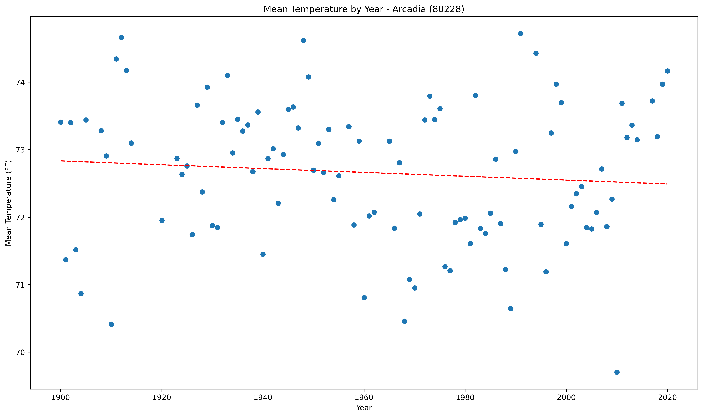
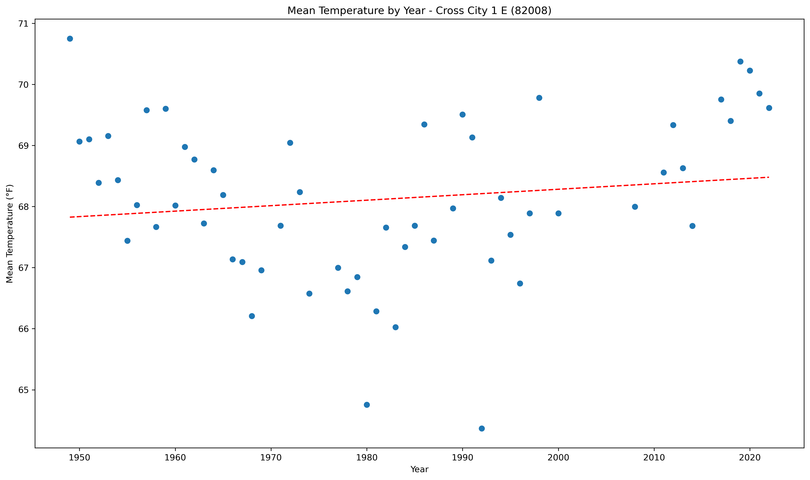
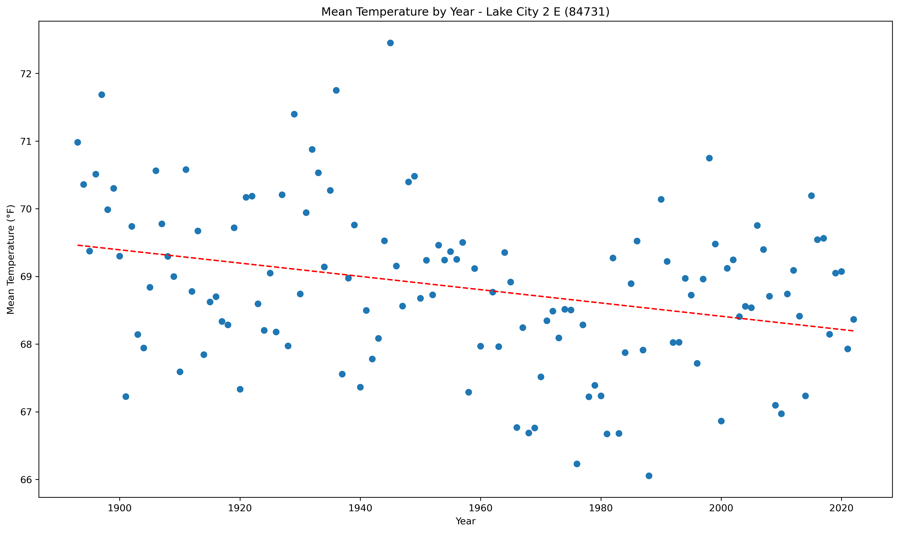
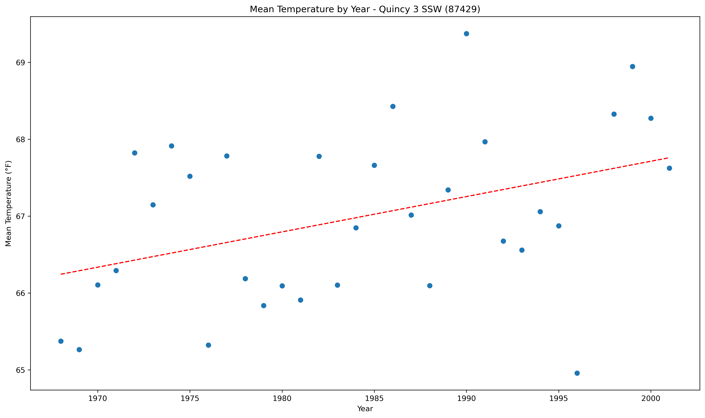

<!DOCTYPE html>
<html>
<head>
    
    <meta http-equiv="content-type" content="text/html; charset=UTF-8" />
    
        <script>
            L_NO_TOUCH = false;
            L_DISABLE_3D = false;
        </script>
    
    <style>html, body {width: 100%;height: 100%;margin: 0;padding: 0;}</style>
    <style>#map {position:absolute;top:0;bottom:0;right:0;left:0;}</style>
    <script src="https://cdn.jsdelivr.net/npm/leaflet@1.9.3/dist/leaflet.js"></script>
    <script src="https://code.jquery.com/jquery-1.12.4.min.js"></script>
    <script src="https://cdn.jsdelivr.net/npm/bootstrap@5.2.2/dist/js/bootstrap.bundle.min.js"></script>
    <script src="https://cdnjs.cloudflare.com/ajax/libs/Leaflet.awesome-markers/2.0.2/leaflet.awesome-markers.js"></script>
    <link rel="stylesheet" href="https://cdn.jsdelivr.net/npm/leaflet@1.9.3/dist/leaflet.css"/>
    <link rel="stylesheet" href="https://cdn.jsdelivr.net/npm/bootstrap@5.2.2/dist/css/bootstrap.min.css"/>
    <link rel="stylesheet" href="https://netdna.bootstrapcdn.com/bootstrap/3.0.0/css/bootstrap.min.css"/>
    <link rel="stylesheet" href="https://cdn.jsdelivr.net/npm/@fortawesome/fontawesome-free@6.2.0/css/all.min.css"/>
    <link rel="stylesheet" href="https://cdnjs.cloudflare.com/ajax/libs/Leaflet.awesome-markers/2.0.2/leaflet.awesome-markers.css"/>
    <link rel="stylesheet" href="https://cdn.jsdelivr.net/gh/python-visualization/folium/folium/templates/leaflet.awesome.rotate.min.css"/>
    
            <meta name="viewport" content="width=device-width,
                initial-scale=1.0, maximum-scale=1.0, user-scalable=no" />
            <style>
                #map_4287004800eb5430745034e8f8593242 {
                    position: relative;
                    width: 100.0%;
                    height: 100.0%;
                    left: 0.0%;
                    top: 0.0%;
                }
                .leaflet-container { font-size: 1rem; }
            </style>
        
</head>
<body>
    
    
            <div class="folium-map" id="map_4287004800eb5430745034e8f8593242" ></div>
        
</body>
<script>
    
    
            var map_4287004800eb5430745034e8f8593242 = L.map(
                "map_4287004800eb5430745034e8f8593242",
                {
                    center: [28.0, -82.5],
                    crs: L.CRS.EPSG3857,
                    zoom: 7,
                    zoomControl: false,
                    preferCanvas: false,
                }
            );

            

        
    
            var tile_layer_021b1553e4b8a9e72eb457f7dc2d6054 = L.tileLayer(
                "https://cartodb-basemaps-{s}.global.ssl.fastly.net/dark_all/{z}/{x}/{y}.png",
                {"attribution": "\u0026copy; \u003ca target=\"_blank\" href=\"http://www.openstreetmap.org/copyright\"\u003eOpenStreetMap\u003c/a\u003e contributors \u0026copy; \u003ca target=\"_blank\" href=\"http://cartodb.com/attributions\"\u003eCartoDB\u003c/a\u003e, CartoDB \u003ca target=\"_blank\" href =\"http://cartodb.com/attributions\"\u003eattributions\u003c/a\u003e", "detectRetina": false, "maxNativeZoom": 18, "maxZoom": 18, "minZoom": 7, "noWrap": false, "opacity": 1, "subdomains": "abc", "tms": false}
            ).addTo(map_4287004800eb5430745034e8f8593242);
        
    
            var marker_0bdd768f83a70b627954dc13b9ee6be1 = L.marker(
                [29.72, -85.03],
                {}
            ).addTo(map_4287004800eb5430745034e8f8593242);
        
    
            var icon_fd4a482b5a85a0b526f3c556bb3e9480 = L.AwesomeMarkers.icon(
                {"extraClasses": "fa-rotate-0", "icon": "info-sign", "iconColor": "white", "markerColor": "orange", "prefix": "glyphicon"}
            );
            marker_0bdd768f83a70b627954dc13b9ee6be1.setIcon(icon_fd4a482b5a85a0b526f3c556bb3e9480);
        
    
        var popup_3fe119e9bd851925b64d64e8a0eaea0b = L.popup({"maxWidth": 1000, "minWidth": 500});

        
            
                var html_a0cd029503d2b1c58a973e0da285a5bc = $(`<div id="html_a0cd029503d2b1c58a973e0da285a5bc" style="width: 100.0%; height: 100.0%;"><b>Apalachicola Airport (80211)</b><br>lat: 29.72, lon: -85.03<br><a href='../../static/img/plots/trends/meantemp_yearly/80211_mean_trend_yearly.png'></a></div>`)[0];
                popup_3fe119e9bd851925b64d64e8a0eaea0b.setContent(html_a0cd029503d2b1c58a973e0da285a5bc);
            
        

        marker_0bdd768f83a70b627954dc13b9ee6be1.bindPopup(popup_3fe119e9bd851925b64d64e8a0eaea0b)
        ;

        
    
    
            var marker_5007c7326f28420af2b1f85fe91412be = L.marker(
                [27.22, -81.86],
                {}
            ).addTo(map_4287004800eb5430745034e8f8593242);
        
    
            var icon_77bedafc2ba848daeac8571d1ba15437 = L.AwesomeMarkers.icon(
                {"extraClasses": "fa-rotate-0", "icon": "info-sign", "iconColor": "white", "markerColor": "blue", "prefix": "glyphicon"}
            );
            marker_5007c7326f28420af2b1f85fe91412be.setIcon(icon_77bedafc2ba848daeac8571d1ba15437);
        
    
        var popup_b8c8b8451facf6368a26075ec95a8edf = L.popup({"maxWidth": 1000, "minWidth": 500});

        
            
                var html_4304a331b03fd5806fbb7ab2e461e67a = $(`<div id="html_4304a331b03fd5806fbb7ab2e461e67a" style="width: 100.0%; height: 100.0%;"><b>Arcadia (80228)</b><br>lat: 27.22, lon: -81.86<br><a href='../../static/img/plots/trends/meantemp_yearly/80228_mean_trend_yearly.png'></a></div>`)[0];
                popup_b8c8b8451facf6368a26075ec95a8edf.setContent(html_4304a331b03fd5806fbb7ab2e461e67a);
            
        

        marker_5007c7326f28420af2b1f85fe91412be.bindPopup(popup_b8c8b8451facf6368a26075ec95a8edf)
        ;

        
    
    
            var marker_046b730f587fcaa7f08726939365acc3 = L.marker(
                [27.18, -81.35],
                {}
            ).addTo(map_4287004800eb5430745034e8f8593242);
        
    
            var icon_56cfa772d76cd0f9ef14ebd5db4d0671 = L.AwesomeMarkers.icon(
                {"extraClasses": "fa-rotate-0", "icon": "info-sign", "iconColor": "white", "markerColor": "orange", "prefix": "glyphicon"}
            );
            marker_046b730f587fcaa7f08726939365acc3.setIcon(icon_56cfa772d76cd0f9ef14ebd5db4d0671);
        
    
        var popup_fdb6c8aa748b89095366470da8c7a19b = L.popup({"maxWidth": 1000, "minWidth": 500});

        
            
                var html_d12090cd242df7b831d6f852d019495d = $(`<div id="html_d12090cd242df7b831d6f852d019495d" style="width: 100.0%; height: 100.0%;"><b>Archbold Bio Station (80236)</b><br>lat: 27.18, lon: -81.35<br><a href='../../static/img/plots/trends/meantemp_yearly/80236_mean_trend_yearly.png'></a></div>`)[0];
                popup_fdb6c8aa748b89095366470da8c7a19b.setContent(html_d12090cd242df7b831d6f852d019495d);
            
        

        marker_046b730f587fcaa7f08726939365acc3.bindPopup(popup_fdb6c8aa748b89095366470da8c7a19b)
        ;

        
    
    
            var marker_5c82d1db0e6db2a21ee65aaa20e3d815 = L.marker(
                [27.59, -81.53],
                {}
            ).addTo(map_4287004800eb5430745034e8f8593242);
        
    
            var icon_8f127d24e0418c8db4557ef3ef186127 = L.AwesomeMarkers.icon(
                {"extraClasses": "fa-rotate-0", "icon": "info-sign", "iconColor": "white", "markerColor": "blue", "prefix": "glyphicon"}
            );
            marker_5c82d1db0e6db2a21ee65aaa20e3d815.setIcon(icon_8f127d24e0418c8db4557ef3ef186127);
        
    
        var popup_062cf54ef0ffc24bb532731bd0782703 = L.popup({"maxWidth": 1000, "minWidth": 500});

        
            
                var html_571eafea375f80ca82545e42333e70e6 = $(`<div id="html_571eafea375f80ca82545e42333e70e6" style="width: 100.0%; height: 100.0%;"><b>Avon Park 2 W (80369)</b><br>lat: 27.59, lon: -81.53<br><a href='../../static/img/plots/trends/meantemp_yearly/80369_mean_trend_yearly.png'></a></div>`)[0];
                popup_062cf54ef0ffc24bb532731bd0782703.setContent(html_571eafea375f80ca82545e42333e70e6);
            
        

        marker_5c82d1db0e6db2a21ee65aaa20e3d815.bindPopup(popup_062cf54ef0ffc24bb532731bd0782703)
        ;

        
    
    
            var marker_9f47e1c8aeb542f4f5bf1e51f49e5e37 = L.marker(
                [27.95, -81.79],
                {}
            ).addTo(map_4287004800eb5430745034e8f8593242);
        
    
            var icon_148fbb5d95a46b7314857a7a96deba5e = L.AwesomeMarkers.icon(
                {"extraClasses": "fa-rotate-0", "icon": "info-sign", "iconColor": "white", "markerColor": "orange", "prefix": "glyphicon"}
            );
            marker_9f47e1c8aeb542f4f5bf1e51f49e5e37.setIcon(icon_148fbb5d95a46b7314857a7a96deba5e);
        
    
        var popup_68e588dfb20699b145a5bb56689c8ad3 = L.popup({"maxWidth": 1000, "minWidth": 500});

        
            
                var html_16cedc83404005b3d4a21ff2d73c2fef = $(`<div id="html_16cedc83404005b3d4a21ff2d73c2fef" style="width: 100.0%; height: 100.0%;"><b>Bartow (80478)</b><br>lat: 27.95, lon: -81.79<br><a href='../../static/img/plots/trends/meantemp_yearly/80478_mean_trend_yearly.png'></a></div>`)[0];
                popup_68e588dfb20699b145a5bb56689c8ad3.setContent(html_16cedc83404005b3d4a21ff2d73c2fef);
            
        

        marker_9f47e1c8aeb542f4f5bf1e51f49e5e37.bindPopup(popup_68e588dfb20699b145a5bb56689c8ad3)
        ;

        
    
    
            var marker_7cea272e8da6325728820b7fd535ea52 = L.marker(
                [26.7, -80.66],
                {}
            ).addTo(map_4287004800eb5430745034e8f8593242);
        
    
            var icon_b8dc521c0a62184841788149f9f8f6dd = L.AwesomeMarkers.icon(
                {"extraClasses": "fa-rotate-0", "icon": "info-sign", "iconColor": "white", "markerColor": "orange", "prefix": "glyphicon"}
            );
            marker_7cea272e8da6325728820b7fd535ea52.setIcon(icon_b8dc521c0a62184841788149f9f8f6dd);
        
    
        var popup_a1a2feffccaeadd0909ed0211fca633f = L.popup({"maxWidth": 1000, "minWidth": 500});

        
            
                var html_30c07a6cb3b3b7d184ffec2451378f06 = $(`<div id="html_30c07a6cb3b3b7d184ffec2451378f06" style="width: 100.0%; height: 100.0%;"><b>Belle Glade Airport (80611)</b><br>lat: 26.7, lon: -80.66<br><a href='../../static/img/plots/trends/meantemp_yearly/80611_mean_trend_yearly.png'></a></div>`)[0];
                popup_a1a2feffccaeadd0909ed0211fca633f.setContent(html_30c07a6cb3b3b7d184ffec2451378f06);
            
        

        marker_7cea272e8da6325728820b7fd535ea52.bindPopup(popup_a1a2feffccaeadd0909ed0211fca633f)
        ;

        
    
    
            var marker_ac880e4b03b94fab1b0d7f6404feb5fa = L.marker(
                [27.5, -82.57],
                {}
            ).addTo(map_4287004800eb5430745034e8f8593242);
        
    
            var icon_c3d5990a4fe7f055caf3076cde143557 = L.AwesomeMarkers.icon(
                {"extraClasses": "fa-rotate-0", "icon": "info-sign", "iconColor": "white", "markerColor": "red", "prefix": "glyphicon"}
            );
            marker_ac880e4b03b94fab1b0d7f6404feb5fa.setIcon(icon_c3d5990a4fe7f055caf3076cde143557);
        
    
        var popup_b24c63267f295992c0d0219eb77890a4 = L.popup({"maxWidth": 1000, "minWidth": 500});

        
            
                var html_0448fd91cfdc49039816d8f2a58a8714 = $(`<div id="html_0448fd91cfdc49039816d8f2a58a8714" style="width: 100.0%; height: 100.0%;"><b>Bradenton 5 ESE (80945)</b><br>lat: 27.5, lon: -82.57<br><a href='../../static/img/plots/trends/meantemp_yearly/80945_mean_trend_yearly.png'></a></div>`)[0];
                popup_b24c63267f295992c0d0219eb77890a4.setContent(html_0448fd91cfdc49039816d8f2a58a8714);
            
        

        marker_ac880e4b03b94fab1b0d7f6404feb5fa.bindPopup(popup_b24c63267f295992c0d0219eb77890a4)
        ;

        
    
    
            var marker_ed01bbcba65ecc36035c7a6a61c750e5 = L.marker(
                [28.62, -82.37],
                {}
            ).addTo(map_4287004800eb5430745034e8f8593242);
        
    
            var icon_58bd0864075e11f236c2cd44fc7834b6 = L.AwesomeMarkers.icon(
                {"extraClasses": "fa-rotate-0", "icon": "info-sign", "iconColor": "white", "markerColor": "orange", "prefix": "glyphicon"}
            );
            marker_ed01bbcba65ecc36035c7a6a61c750e5.setIcon(icon_58bd0864075e11f236c2cd44fc7834b6);
        
    
        var popup_9cf01bbb5456695a882b0b0dba7166d0 = L.popup({"maxWidth": 1000, "minWidth": 500});

        
            
                var html_0df0c017b95f086092733f93142d4027 = $(`<div id="html_0df0c017b95f086092733f93142d4027" style="width: 100.0%; height: 100.0%;"><b>Chinsegut Hill (81046)</b><br>lat: 28.62, lon: -82.37<br><a href='../../static/img/plots/trends/meantemp_yearly/81046_mean_trend_yearly.png'></a></div>`)[0];
                popup_9cf01bbb5456695a882b0b0dba7166d0.setContent(html_0df0c017b95f086092733f93142d4027);
            
        

        marker_ed01bbcba65ecc36035c7a6a61c750e5.bindPopup(popup_9cf01bbb5456695a882b0b0dba7166d0)
        ;

        
    
    
            var marker_cfcb897b2d4725f0b94d1fabb6322a8d = L.marker(
                [28.66, -82.11],
                {}
            ).addTo(map_4287004800eb5430745034e8f8593242);
        
    
            var icon_647fa25446c90e8fb7556a9bbce5937a = L.AwesomeMarkers.icon(
                {"extraClasses": "fa-rotate-0", "icon": "info-sign", "iconColor": "white", "markerColor": "orange", "prefix": "glyphicon"}
            );
            marker_cfcb897b2d4725f0b94d1fabb6322a8d.setIcon(icon_647fa25446c90e8fb7556a9bbce5937a);
        
    
        var popup_e0fde260c96193ad64d3839bc40684f3 = L.popup({"maxWidth": 1000, "minWidth": 500});

        
            
                var html_ca5a6744bc96380b029f3674cefde1f5 = $(`<div id="html_ca5a6744bc96380b029f3674cefde1f5" style="width: 100.0%; height: 100.0%;"><b>Bushnell 1 E (81163)</b><br>lat: 28.66, lon: -82.11<br><a href='../../static/img/plots/trends/meantemp_yearly/81163_mean_trend_yearly.png'></a></div>`)[0];
                popup_e0fde260c96193ad64d3839bc40684f3.setContent(html_ca5a6744bc96380b029f3674cefde1f5);
            
        

        marker_cfcb897b2d4725f0b94d1fabb6322a8d.bindPopup(popup_e0fde260c96193ad64d3839bc40684f3)
        ;

        
    
    
            var marker_2beec0a3547d8e1d96970dce0c8f4d66 = L.marker(
                [26.86, -80.63],
                {}
            ).addTo(map_4287004800eb5430745034e8f8593242);
        
    
            var icon_1300cfdb12bdeae4ada8ea96fc3adb1e = L.AwesomeMarkers.icon(
                {"extraClasses": "fa-rotate-0", "icon": "info-sign", "iconColor": "white", "markerColor": "red", "prefix": "glyphicon"}
            );
            marker_2beec0a3547d8e1d96970dce0c8f4d66.setIcon(icon_1300cfdb12bdeae4ada8ea96fc3adb1e);
        
    
        var popup_55c8056b3bf625efdc5e701982f6f1c0 = L.popup({"maxWidth": 1000, "minWidth": 500});

        
            
                var html_dfab10c29945767c708a372a7628aeda = $(`<div id="html_dfab10c29945767c708a372a7628aeda" style="width: 100.0%; height: 100.0%;"><b>Canal Point (81276)</b><br>lat: 26.86, lon: -80.63<br><a href='../../static/img/plots/trends/meantemp_yearly/81276_mean_trend_yearly.png'></a></div>`)[0];
                popup_55c8056b3bf625efdc5e701982f6f1c0.setContent(html_dfab10c29945767c708a372a7628aeda);
            
        

        marker_2beec0a3547d8e1d96970dce0c8f4d66.bindPopup(popup_55c8056b3bf625efdc5e701982f6f1c0)
        ;

        
    
    
            var marker_8ee024a9aa23618352de1f554bd674a5 = L.marker(
                [30.78, -85.54],
                {}
            ).addTo(map_4287004800eb5430745034e8f8593242);
        
    
            var icon_c7e68fb7de61125870896226bed64180 = L.AwesomeMarkers.icon(
                {"extraClasses": "fa-rotate-0", "icon": "info-sign", "iconColor": "white", "markerColor": "blue", "prefix": "glyphicon"}
            );
            marker_8ee024a9aa23618352de1f554bd674a5.setIcon(icon_c7e68fb7de61125870896226bed64180);
        
    
        var popup_187f4c8ce438f3d12f8b9a9a72bb914c = L.popup({"maxWidth": 1000, "minWidth": 500});

        
            
                var html_99cf7eb737eda902bfb73503715c0c19 = $(`<div id="html_99cf7eb737eda902bfb73503715c0c19" style="width: 100.0%; height: 100.0%;"><b>Chipley (81544)</b><br>lat: 30.78, lon: -85.54<br><a href='../../static/img/plots/trends/meantemp_yearly/81544_mean_trend_yearly.png'></a></div>`)[0];
                popup_187f4c8ce438f3d12f8b9a9a72bb914c.setContent(html_99cf7eb737eda902bfb73503715c0c19);
            
        

        marker_8ee024a9aa23618352de1f554bd674a5.bindPopup(popup_187f4c8ce438f3d12f8b9a9a72bb914c)
        ;

        
    
    
            var marker_11d89b9340f983a1b467fc8bbe7a7c1f = L.marker(
                [28.56, -81.77],
                {}
            ).addTo(map_4287004800eb5430745034e8f8593242);
        
    
            var icon_5ee624cf27736dbbcad0c884763c53f6 = L.AwesomeMarkers.icon(
                {"extraClasses": "fa-rotate-0", "icon": "info-sign", "iconColor": "white", "markerColor": "orange", "prefix": "glyphicon"}
            );
            marker_11d89b9340f983a1b467fc8bbe7a7c1f.setIcon(icon_5ee624cf27736dbbcad0c884763c53f6);
        
    
        var popup_067fd360d3f562133a886e5f4a4da4e6 = L.popup({"maxWidth": 1000, "minWidth": 500});

        
            
                var html_8e5f350ab5e6799a9f25438046eb3526 = $(`<div id="html_8e5f350ab5e6799a9f25438046eb3526" style="width: 100.0%; height: 100.0%;"><b>Clermont 9 S (81641)</b><br>lat: 28.56, lon: -81.77<br><a href='../../static/img/plots/trends/meantemp_yearly/81641_mean_trend_yearly.png'></a></div>`)[0];
                popup_067fd360d3f562133a886e5f4a4da4e6.setContent(html_8e5f350ab5e6799a9f25438046eb3526);
            
        

        marker_11d89b9340f983a1b467fc8bbe7a7c1f.bindPopup(popup_067fd360d3f562133a886e5f4a4da4e6)
        ;

        
    
    
            var marker_7560ffa68d79edf7a66937a8d02c39a6 = L.marker(
                [29.43, -81.51],
                {}
            ).addTo(map_4287004800eb5430745034e8f8593242);
        
    
            var icon_cf887084f0bf7ac9fd29603f7d5cae29 = L.AwesomeMarkers.icon(
                {"extraClasses": "fa-rotate-0", "icon": "info-sign", "iconColor": "white", "markerColor": "orange", "prefix": "glyphicon"}
            );
            marker_7560ffa68d79edf7a66937a8d02c39a6.setIcon(icon_cf887084f0bf7ac9fd29603f7d5cae29);
        
    
        var popup_ea0e5e61724ef5f16319ba9b74f18af3 = L.popup({"maxWidth": 1000, "minWidth": 500});

        
            
                var html_0ebd0f0ac848c5136e102d25cc51d4ba = $(`<div id="html_0ebd0f0ac848c5136e102d25cc51d4ba" style="width: 100.0%; height: 100.0%;"><b>Crescent City (81978)</b><br>lat: 29.43, lon: -81.51<br><a href='../../static/img/plots/trends/meantemp_yearly/81978_mean_trend_yearly.png'></a></div>`)[0];
                popup_ea0e5e61724ef5f16319ba9b74f18af3.setContent(html_0ebd0f0ac848c5136e102d25cc51d4ba);
            
        

        marker_7560ffa68d79edf7a66937a8d02c39a6.bindPopup(popup_ea0e5e61724ef5f16319ba9b74f18af3)
        ;

        
    
    
            var marker_a91e0a758aeaaec8b0f12618c5836f70 = L.marker(
                [30.78, -86.52],
                {}
            ).addTo(map_4287004800eb5430745034e8f8593242);
        
    
            var icon_803c22b7deb03bc47020b6a09e41cd36 = L.AwesomeMarkers.icon(
                {"extraClasses": "fa-rotate-0", "icon": "info-sign", "iconColor": "white", "markerColor": "orange", "prefix": "glyphicon"}
            );
            marker_a91e0a758aeaaec8b0f12618c5836f70.setIcon(icon_803c22b7deb03bc47020b6a09e41cd36);
        
    
        var popup_0144a2ad39ec22662f8b8ada089230a9 = L.popup({"maxWidth": 1000, "minWidth": 500});

        
            
                var html_042534889f8cc80345787276de711c92 = $(`<div id="html_042534889f8cc80345787276de711c92" style="width: 100.0%; height: 100.0%;"><b>Crestview Bob Sikes Airport (81986)</b><br>lat: 30.78, lon: -86.52<br><a href='../../static/img/plots/trends/meantemp_yearly/81986_mean_trend_yearly.png'></a></div>`)[0];
                popup_0144a2ad39ec22662f8b8ada089230a9.setContent(html_042534889f8cc80345787276de711c92);
            
        

        marker_a91e0a758aeaaec8b0f12618c5836f70.bindPopup(popup_0144a2ad39ec22662f8b8ada089230a9)
        ;

        
    
    
            var marker_b67dc5edb007b0bc7bf3fa805d8bd835 = L.marker(
                [29.63, -83.13],
                {}
            ).addTo(map_4287004800eb5430745034e8f8593242);
        
    
            var icon_aafa2cd152e00ed8088869ab1bd50bba = L.AwesomeMarkers.icon(
                {"extraClasses": "fa-rotate-0", "icon": "info-sign", "iconColor": "white", "markerColor": "orange", "prefix": "glyphicon"}
            );
            marker_b67dc5edb007b0bc7bf3fa805d8bd835.setIcon(icon_aafa2cd152e00ed8088869ab1bd50bba);
        
    
        var popup_9b2aa64ffad2a0f281377727320a6997 = L.popup({"maxWidth": 1000, "minWidth": 500});

        
            
                var html_ddac91b5be7ba99733437067d483bfed = $(`<div id="html_ddac91b5be7ba99733437067d483bfed" style="width: 100.0%; height: 100.0%;"><b>Cross City 1 E (82008)</b><br>lat: 29.63, lon: -83.13<br><a href='../../static/img/plots/trends/meantemp_yearly/82008_mean_trend_yearly.png'></a></div>`)[0];
                popup_9b2aa64ffad2a0f281377727320a6997.setContent(html_ddac91b5be7ba99733437067d483bfed);
            
        

        marker_b67dc5edb007b0bc7bf3fa805d8bd835.bindPopup(popup_9b2aa64ffad2a0f281377727320a6997)
        ;

        
    
    
            var marker_23f8cdcc7a6ae05405da213d1c7e520c = L.marker(
                [29.16, -81.0],
                {}
            ).addTo(map_4287004800eb5430745034e8f8593242);
        
    
            var icon_5a55d5cd2273a77372b56f2ea61269d5 = L.AwesomeMarkers.icon(
                {"extraClasses": "fa-rotate-0", "icon": "info-sign", "iconColor": "white", "markerColor": "orange", "prefix": "glyphicon"}
            );
            marker_23f8cdcc7a6ae05405da213d1c7e520c.setIcon(icon_5a55d5cd2273a77372b56f2ea61269d5);
        
    
        var popup_8dd8e1c28d70252f4761ed392c9d7119 = L.popup({"maxWidth": 1000, "minWidth": 500});

        
            
                var html_ba55017eb23fab328bd33dca147a639c = $(`<div id="html_ba55017eb23fab328bd33dca147a639c" style="width: 100.0%; height: 100.0%;"><b>Daytona Beach (82150)</b><br>lat: 29.16, lon: -81<br><a href='../../static/img/plots/trends/meantemp_yearly/82150_mean_trend_yearly.png'></a></div>`)[0];
                popup_8dd8e1c28d70252f4761ed392c9d7119.setContent(html_ba55017eb23fab328bd33dca147a639c);
            
        

        marker_23f8cdcc7a6ae05405da213d1c7e520c.bindPopup(popup_8dd8e1c28d70252f4761ed392c9d7119)
        ;

        
    
    
            var marker_33aa2e327edc95cd5ca72975cae57525 = L.marker(
                [29.18, -81.06],
                {}
            ).addTo(map_4287004800eb5430745034e8f8593242);
        
    
            var icon_d46967519cac9dc01ba08e995f90f10d = L.AwesomeMarkers.icon(
                {"extraClasses": "fa-rotate-0", "icon": "info-sign", "iconColor": "white", "markerColor": "orange", "prefix": "glyphicon"}
            );
            marker_33aa2e327edc95cd5ca72975cae57525.setIcon(icon_d46967519cac9dc01ba08e995f90f10d);
        
    
        var popup_1ec6f467d9ae2f16272272d352f5a4a0 = L.popup({"maxWidth": 1000, "minWidth": 500});

        
            
                var html_3879ef5223fa839347e97f337a19f411 = $(`<div id="html_3879ef5223fa839347e97f337a19f411" style="width: 100.0%; height: 100.0%;"><b>Daytona Beach Intl Airport (82158)</b><br>lat: 29.18, lon: -81.06<br><a href='../../static/img/plots/trends/meantemp_yearly/82158_mean_trend_yearly.png'></a></div>`)[0];
                popup_1ec6f467d9ae2f16272272d352f5a4a0.setContent(html_3879ef5223fa839347e97f337a19f411);
            
        

        marker_33aa2e327edc95cd5ca72975cae57525.bindPopup(popup_1ec6f467d9ae2f16272272d352f5a4a0)
        ;

        
    
    
            var marker_2254adcbf36d66e255276c4447c6e22b = L.marker(
                [30.72, -86.12],
                {}
            ).addTo(map_4287004800eb5430745034e8f8593242);
        
    
            var icon_f5043ffde6a59b89183b736b1747508a = L.AwesomeMarkers.icon(
                {"extraClasses": "fa-rotate-0", "icon": "info-sign", "iconColor": "white", "markerColor": "blue", "prefix": "glyphicon"}
            );
            marker_2254adcbf36d66e255276c4447c6e22b.setIcon(icon_f5043ffde6a59b89183b736b1747508a);
        
    
        var popup_a198e58bac99e1cd0413c4d1a99c857e = L.popup({"maxWidth": 1000, "minWidth": 500});

        
            
                var html_fc144d5dda5f69eae2efb27894a0798d = $(`<div id="html_fc144d5dda5f69eae2efb27894a0798d" style="width: 100.0%; height: 100.0%;"><b>De Funiak Springs 1 E (82220)</b><br>lat: 30.72, lon: -86.12<br><a href='../../static/img/plots/trends/meantemp_yearly/82220_mean_trend_yearly.png'></a></div>`)[0];
                popup_a198e58bac99e1cd0413c4d1a99c857e.setContent(html_fc144d5dda5f69eae2efb27894a0798d);
            
        

        marker_2254adcbf36d66e255276c4447c6e22b.bindPopup(popup_a198e58bac99e1cd0413c4d1a99c857e)
        ;

        
    
    
            var marker_467ba172d5e2ae1b27fe4ced76131a51 = L.marker(
                [29.03, -81.3],
                {}
            ).addTo(map_4287004800eb5430745034e8f8593242);
        
    
            var icon_b30b9c88a791bf56310ec32940d1df3f = L.AwesomeMarkers.icon(
                {"extraClasses": "fa-rotate-0", "icon": "info-sign", "iconColor": "white", "markerColor": "blue", "prefix": "glyphicon"}
            );
            marker_467ba172d5e2ae1b27fe4ced76131a51.setIcon(icon_b30b9c88a791bf56310ec32940d1df3f);
        
    
        var popup_df35d2b4cc50aeab42c53158291c3c82 = L.popup({"maxWidth": 1000, "minWidth": 500});

        
            
                var html_e05e8d79b0189ff8025dd0c77450cdbd = $(`<div id="html_e05e8d79b0189ff8025dd0c77450cdbd" style="width: 100.0%; height: 100.0%;"><b>Deland 1 SSE (82229)</b><br>lat: 29.03, lon: -81.3<br><a href='../../static/img/plots/trends/meantemp_yearly/82229_mean_trend_yearly.png'></a></div>`)[0];
                popup_df35d2b4cc50aeab42c53158291c3c82.setContent(html_e05e8d79b0189ff8025dd0c77450cdbd);
            
        

        marker_467ba172d5e2ae1b27fe4ced76131a51.bindPopup(popup_df35d2b4cc50aeab42c53158291c3c82)
        ;

        
    
    
            var marker_f4a4ef05e81ee69118def1360695c56d = L.marker(
                [30.71, -85.72],
                {}
            ).addTo(map_4287004800eb5430745034e8f8593242);
        
    
            var icon_0f9ac5d8919cbae6a15644c14d007aeb = L.AwesomeMarkers.icon(
                {"extraClasses": "fa-rotate-0", "icon": "info-sign", "iconColor": "white", "markerColor": "orange", "prefix": "glyphicon"}
            );
            marker_f4a4ef05e81ee69118def1360695c56d.setIcon(icon_0f9ac5d8919cbae6a15644c14d007aeb);
        
    
        var popup_d413505392e616e51fe936856955333e = L.popup({"maxWidth": 1000, "minWidth": 500});

        
            
                var html_f46efd30fb34f0ef41e9e1db2ddb8edb = $(`<div id="html_f46efd30fb34f0ef41e9e1db2ddb8edb" style="width: 100.0%; height: 100.0%;"><b>Devils Garden (82298)</b><br>lat: 30.71, lon: -85.72<br><a href='../../static/img/plots/trends/meantemp_yearly/82298_mean_trend_yearly.png'></a></div>`)[0];
                popup_d413505392e616e51fe936856955333e.setContent(html_f46efd30fb34f0ef41e9e1db2ddb8edb);
            
        

        marker_f4a4ef05e81ee69118def1360695c56d.bindPopup(popup_d413505392e616e51fe936856955333e)
        ;

        
    
    
            var marker_d8e8958b9a7045e13e05e594fd27f5cc = L.marker(
                [25.29, -80.89],
                {}
            ).addTo(map_4287004800eb5430745034e8f8593242);
        
    
            var icon_9ca5edb396eae6c858d07b56767e1f41 = L.AwesomeMarkers.icon(
                {"extraClasses": "fa-rotate-0", "icon": "info-sign", "iconColor": "white", "markerColor": "orange", "prefix": "glyphicon"}
            );
            marker_d8e8958b9a7045e13e05e594fd27f5cc.setIcon(icon_9ca5edb396eae6c858d07b56767e1f41);
        
    
        var popup_926e8031c9bcbda52fc7af31471db8eb = L.popup({"maxWidth": 1000, "minWidth": 500});

        
            
                var html_8cf0924b77258173659f2dc3119970c5 = $(`<div id="html_8cf0924b77258173659f2dc3119970c5" style="width: 100.0%; height: 100.0%;"><b>Everglades (82850)</b><br>lat: 25.29, lon: -80.89<br><a href='../../static/img/plots/trends/meantemp_yearly/82850_mean_trend_yearly.png'></a></div>`)[0];
                popup_926e8031c9bcbda52fc7af31471db8eb.setContent(html_8cf0924b77258173659f2dc3119970c5);
            
        

        marker_d8e8958b9a7045e13e05e594fd27f5cc.bindPopup(popup_926e8031c9bcbda52fc7af31471db8eb)
        ;

        
    
    
            var marker_065e23899b36dc7ba8ed8503668fa1b7 = L.marker(
                [29.75, -81.54],
                {}
            ).addTo(map_4287004800eb5430745034e8f8593242);
        
    
            var icon_d29594ecd3c7b032d1f8bda6f5ce83c2 = L.AwesomeMarkers.icon(
                {"extraClasses": "fa-rotate-0", "icon": "info-sign", "iconColor": "white", "markerColor": "orange", "prefix": "glyphicon"}
            );
            marker_065e23899b36dc7ba8ed8503668fa1b7.setIcon(icon_d29594ecd3c7b032d1f8bda6f5ce83c2);
        
    
        var popup_2fc40f925a352017c35770c437374ce9 = L.popup({"maxWidth": 1000, "minWidth": 500});

        
            
                var html_d10cf6c4cb8d6fdc63e86abe07daeff8 = $(`<div id="html_d10cf6c4cb8d6fdc63e86abe07daeff8" style="width: 100.0%; height: 100.0%;"><b>Federal Point (82915)</b><br>lat: 29.75, lon: -81.54<br><a href='../../static/img/plots/trends/meantemp_yearly/82915_mean_trend_yearly.png'></a></div>`)[0];
                popup_2fc40f925a352017c35770c437374ce9.setContent(html_d10cf6c4cb8d6fdc63e86abe07daeff8);
            
        

        marker_065e23899b36dc7ba8ed8503668fa1b7.bindPopup(popup_2fc40f925a352017c35770c437374ce9)
        ;

        
    
    
            var marker_dc90916a0590e5b10d3dd522a689b9d8 = L.marker(
                [30.62, -81.46],
                {}
            ).addTo(map_4287004800eb5430745034e8f8593242);
        
    
            var icon_af8f1b92fdd71af2c76e66ec20984695 = L.AwesomeMarkers.icon(
                {"extraClasses": "fa-rotate-0", "icon": "info-sign", "iconColor": "white", "markerColor": "blue", "prefix": "glyphicon"}
            );
            marker_dc90916a0590e5b10d3dd522a689b9d8.setIcon(icon_af8f1b92fdd71af2c76e66ec20984695);
        
    
        var popup_3d9ee2210973552dedf022cd510814b8 = L.popup({"maxWidth": 1000, "minWidth": 500});

        
            
                var html_617abfecfbbc4879e7ff9e71442591ac = $(`<div id="html_617abfecfbbc4879e7ff9e71442591ac" style="width: 100.0%; height: 100.0%;"><b>Fernandina Beach (82944)</b><br>lat: 30.62, lon: -81.46<br><a href='../../static/img/plots/trends/meantemp_yearly/82944_mean_trend_yearly.png'></a></div>`)[0];
                popup_3d9ee2210973552dedf022cd510814b8.setContent(html_617abfecfbbc4879e7ff9e71442591ac);
            
        

        marker_dc90916a0590e5b10d3dd522a689b9d8.bindPopup(popup_3d9ee2210973552dedf022cd510814b8)
        ;

        
    
    
            var marker_1edd3fdba369d44ac6daadf266201f6a = L.marker(
                [25.14, -80.93],
                {}
            ).addTo(map_4287004800eb5430745034e8f8593242);
        
    
            var icon_9f58d4ff1b7a067a89cb3bad98549c77 = L.AwesomeMarkers.icon(
                {"extraClasses": "fa-rotate-0", "icon": "info-sign", "iconColor": "white", "markerColor": "red", "prefix": "glyphicon"}
            );
            marker_1edd3fdba369d44ac6daadf266201f6a.setIcon(icon_9f58d4ff1b7a067a89cb3bad98549c77);
        
    
        var popup_6123dc5fc636c7ef4196906e7a76d4f6 = L.popup({"maxWidth": 1000, "minWidth": 500});

        
            
                var html_48dc5a6b4e0644fb051d9c384ada000f = $(`<div id="html_48dc5a6b4e0644fb051d9c384ada000f" style="width: 100.0%; height: 100.0%;"><b>Flamingo Ranger Station (83020)</b><br>lat: 25.14, lon: -80.93<br><a href='../../static/img/plots/trends/meantemp_yearly/83020_mean_trend_yearly.png'></a></div>`)[0];
                popup_6123dc5fc636c7ef4196906e7a76d4f6.setContent(html_48dc5a6b4e0644fb051d9c384ada000f);
            
        

        marker_1edd3fdba369d44ac6daadf266201f6a.bindPopup(popup_6123dc5fc636c7ef4196906e7a76d4f6)
        ;

        
    
    
            var marker_4b3574bf20b500caf746bda6b9aa4234 = L.marker(
                [27.53, -80.81],
                {}
            ).addTo(map_4287004800eb5430745034e8f8593242);
        
    
            var icon_d0ea318c1ba0ef7b42802d36ea0e7bd6 = L.AwesomeMarkers.icon(
                {"extraClasses": "fa-rotate-0", "icon": "info-sign", "iconColor": "white", "markerColor": "orange", "prefix": "glyphicon"}
            );
            marker_4b3574bf20b500caf746bda6b9aa4234.setIcon(icon_d0ea318c1ba0ef7b42802d36ea0e7bd6);
        
    
        var popup_2c0b4a66231974da345f01d0bc3a55c2 = L.popup({"maxWidth": 1000, "minWidth": 500});

        
            
                var html_46acbf59ebf1cc471e803dc9a356a97f = $(`<div id="html_46acbf59ebf1cc471e803dc9a356a97f" style="width: 100.0%; height: 100.0%;"><b>Fort Drum (83137)</b><br>lat: 27.53, lon: -80.81<br><a href='../../static/img/plots/trends/meantemp_yearly/83137_mean_trend_yearly.png'></a></div>`)[0];
                popup_2c0b4a66231974da345f01d0bc3a55c2.setContent(html_46acbf59ebf1cc471e803dc9a356a97f);
            
        

        marker_4b3574bf20b500caf746bda6b9aa4234.bindPopup(popup_2c0b4a66231974da345f01d0bc3a55c2)
        ;

        
    
    
            var marker_191d66fbd21bf19b4c7f2e68252e41eb = L.marker(
                [27.61, -81.94],
                {}
            ).addTo(map_4287004800eb5430745034e8f8593242);
        
    
            var icon_7a8954d223e5b4e6a50bf68d3dc18ed2 = L.AwesomeMarkers.icon(
                {"extraClasses": "fa-rotate-0", "icon": "info-sign", "iconColor": "white", "markerColor": "red", "prefix": "glyphicon"}
            );
            marker_191d66fbd21bf19b4c7f2e68252e41eb.setIcon(icon_7a8954d223e5b4e6a50bf68d3dc18ed2);
        
    
        var popup_a792b1801de268df2357c169db7ee2d0 = L.popup({"maxWidth": 1000, "minWidth": 500});

        
            
                var html_adb954b12204c8e024a98c7f6706c050 = $(`<div id="html_adb954b12204c8e024a98c7f6706c050" style="width: 100.0%; height: 100.0%;"><b>Fort Green 12 WSW (83153)</b><br>lat: 27.61, lon: -81.94<br><a href='../../static/img/plots/trends/meantemp_yearly/83153_mean_trend_yearly.png'></a></div>`)[0];
                popup_a792b1801de268df2357c169db7ee2d0.setContent(html_adb954b12204c8e024a98c7f6706c050);
            
        

        marker_191d66fbd21bf19b4c7f2e68252e41eb.bindPopup(popup_a792b1801de268df2357c169db7ee2d0)
        ;

        
    
    
            var marker_081f340121c8a7c4c09f7ada85cdcbb1 = L.marker(
                [26.07, -80.15],
                {}
            ).addTo(map_4287004800eb5430745034e8f8593242);
        
    
            var icon_bfb6846a4d52fda9d895c14a0a152dd4 = L.AwesomeMarkers.icon(
                {"extraClasses": "fa-rotate-0", "icon": "info-sign", "iconColor": "white", "markerColor": "orange", "prefix": "glyphicon"}
            );
            marker_081f340121c8a7c4c09f7ada85cdcbb1.setIcon(icon_bfb6846a4d52fda9d895c14a0a152dd4);
        
    
        var popup_aa401295f1a892ebf348b6bdab8ddeb1 = L.popup({"maxWidth": 1000, "minWidth": 500});

        
            
                var html_1a6e86dbd830bcbbae0d967c3ffcb2e6 = $(`<div id="html_1a6e86dbd830bcbbae0d967c3ffcb2e6" style="width: 100.0%; height: 100.0%;"><b>Ft Lauderdale (83163)</b><br>lat: 26.07, lon: -80.15<br><a href='../../static/img/plots/trends/meantemp_yearly/83163_mean_trend_yearly.png'></a></div>`)[0];
                popup_aa401295f1a892ebf348b6bdab8ddeb1.setContent(html_1a6e86dbd830bcbbae0d967c3ffcb2e6);
            
        

        marker_081f340121c8a7c4c09f7ada85cdcbb1.bindPopup(popup_aa401295f1a892ebf348b6bdab8ddeb1)
        ;

        
    
    
            var marker_764b703caf38e4da5d05e09b463854c1 = L.marker(
                [26.13, -80.11],
                {}
            ).addTo(map_4287004800eb5430745034e8f8593242);
        
    
            var icon_bb9838a99a70b3c96d7e702635c14308 = L.AwesomeMarkers.icon(
                {"extraClasses": "fa-rotate-0", "icon": "info-sign", "iconColor": "white", "markerColor": "orange", "prefix": "glyphicon"}
            );
            marker_764b703caf38e4da5d05e09b463854c1.setIcon(icon_bb9838a99a70b3c96d7e702635c14308);
        
    
        var popup_d3a1c3470268401459911e1ac94ad757 = L.popup({"maxWidth": 1000, "minWidth": 500});

        
            
                var html_ab6dd92aa5634f19c8c9c70e579f708a = $(`<div id="html_ab6dd92aa5634f19c8c9c70e579f708a" style="width: 100.0%; height: 100.0%;"><b>Ft Lauderdale Beach (83168)</b><br>lat: 26.13, lon: -80.11<br><a href='../../static/img/plots/trends/meantemp_yearly/83168_mean_trend_yearly.png'></a></div>`)[0];
                popup_d3a1c3470268401459911e1ac94ad757.setContent(html_ab6dd92aa5634f19c8c9c70e579f708a);
            
        

        marker_764b703caf38e4da5d05e09b463854c1.bindPopup(popup_d3a1c3470268401459911e1ac94ad757)
        ;

        
    
    
            var marker_9f08b1d7295e872411d3d4dd1ca58eef = L.marker(
                [26.59, -81.87],
                {}
            ).addTo(map_4287004800eb5430745034e8f8593242);
        
    
            var icon_1cb8f34ce6f81152fc42a23e67ec5d0f = L.AwesomeMarkers.icon(
                {"extraClasses": "fa-rotate-0", "icon": "info-sign", "iconColor": "white", "markerColor": "orange", "prefix": "glyphicon"}
            );
            marker_9f08b1d7295e872411d3d4dd1ca58eef.setIcon(icon_1cb8f34ce6f81152fc42a23e67ec5d0f);
        
    
        var popup_82ed86a1d8d203d425a85c03b685a80d = L.popup({"maxWidth": 1000, "minWidth": 500});

        
            
                var html_eaf79090fa4e9b2b57c9c3e2f312b0e3 = $(`<div id="html_eaf79090fa4e9b2b57c9c3e2f312b0e3" style="width: 100.0%; height: 100.0%;"><b>Fort Myers Page Field Airport (83186)</b><br>lat: 26.59, lon: -81.87<br><a href='../../static/img/plots/trends/meantemp_yearly/83186_mean_trend_yearly.png'></a></div>`)[0];
                popup_82ed86a1d8d203d425a85c03b685a80d.setContent(html_eaf79090fa4e9b2b57c9c3e2f312b0e3);
            
        

        marker_9f08b1d7295e872411d3d4dd1ca58eef.bindPopup(popup_82ed86a1d8d203d425a85c03b685a80d)
        ;

        
    
    
            var marker_ac87ef924d626288ecdba9682e78605e = L.marker(
                [27.44, -80.34],
                {}
            ).addTo(map_4287004800eb5430745034e8f8593242);
        
    
            var icon_7b9086584884c10ab9c9858537ae0db2 = L.AwesomeMarkers.icon(
                {"extraClasses": "fa-rotate-0", "icon": "info-sign", "iconColor": "white", "markerColor": "orange", "prefix": "glyphicon"}
            );
            marker_ac87ef924d626288ecdba9682e78605e.setIcon(icon_7b9086584884c10ab9c9858537ae0db2);
        
    
        var popup_913a7de94df61e02a6d669c723d518b0 = L.popup({"maxWidth": 1000, "minWidth": 500});

        
            
                var html_ebcbd832d7d680dc06bc1ad699154696 = $(`<div id="html_ebcbd832d7d680dc06bc1ad699154696" style="width: 100.0%; height: 100.0%;"><b>Fort Pierce (83207)</b><br>lat: 27.44, lon: -80.34<br><a href='../../static/img/plots/trends/meantemp_yearly/83207_mean_trend_yearly.png'></a></div>`)[0];
                popup_913a7de94df61e02a6d669c723d518b0.setContent(html_ebcbd832d7d680dc06bc1ad699154696);
            
        

        marker_ac87ef924d626288ecdba9682e78605e.bindPopup(popup_913a7de94df61e02a6d669c723d518b0)
        ;

        
    
    
            var marker_c425433f93f01be6b50667c72dab4aac = L.marker(
                [29.69, -82.28],
                {}
            ).addTo(map_4287004800eb5430745034e8f8593242);
        
    
            var icon_3f49bb7b4ef44577e068c5ce3b92b098 = L.AwesomeMarkers.icon(
                {"extraClasses": "fa-rotate-0", "icon": "info-sign", "iconColor": "white", "markerColor": "orange", "prefix": "glyphicon"}
            );
            marker_c425433f93f01be6b50667c72dab4aac.setIcon(icon_3f49bb7b4ef44577e068c5ce3b92b098);
        
    
        var popup_050905d33accb9ee6183b1b9d2d5dde0 = L.popup({"maxWidth": 1000, "minWidth": 500});

        
            
                var html_7136dd3862dad1c7c32180103b131629 = $(`<div id="html_7136dd3862dad1c7c32180103b131629" style="width: 100.0%; height: 100.0%;"><b>Gainesville Regional Airport (83326)</b><br>lat: 29.69, lon: -82.28<br><a href='../../static/img/plots/trends/meantemp_yearly/83326_mean_trend_yearly.png'></a></div>`)[0];
                popup_050905d33accb9ee6183b1b9d2d5dde0.setContent(html_7136dd3862dad1c7c32180103b131629);
            
        

        marker_c425433f93f01be6b50667c72dab4aac.bindPopup(popup_050905d33accb9ee6183b1b9d2d5dde0)
        ;

        
    
    
            var marker_e16381fdc3f234576922d8a228d0161f = L.marker(
                [30.28, -82.16],
                {}
            ).addTo(map_4287004800eb5430745034e8f8593242);
        
    
            var icon_8cf98319d1b3d375e0dbe67f3b602a17 = L.AwesomeMarkers.icon(
                {"extraClasses": "fa-rotate-0", "icon": "info-sign", "iconColor": "white", "markerColor": "blue", "prefix": "glyphicon"}
            );
            marker_e16381fdc3f234576922d8a228d0161f.setIcon(icon_8cf98319d1b3d375e0dbe67f3b602a17);
        
    
        var popup_f4b7b8ad56816caf9bc07d0448b39fd8 = L.popup({"maxWidth": 1000, "minWidth": 500});

        
            
                var html_4aefd9ce363a4839557ab1a11c52b1b9 = $(`<div id="html_4aefd9ce363a4839557ab1a11c52b1b9" style="width: 100.0%; height: 100.0%;"><b>Glen St Mary 1 W (83470)</b><br>lat: 30.28, lon: -82.16<br><a href='../../static/img/plots/trends/meantemp_yearly/83470_mean_trend_yearly.png'></a></div>`)[0];
                popup_f4b7b8ad56816caf9bc07d0448b39fd8.setContent(html_4aefd9ce363a4839557ab1a11c52b1b9);
            
        

        marker_e16381fdc3f234576922d8a228d0161f.bindPopup(popup_f4b7b8ad56816caf9bc07d0448b39fd8)
        ;

        
    
    
            var marker_70d2562db2bb411ffe987cbc8c45f530 = L.marker(
                [29.72, -81.51],
                {}
            ).addTo(map_4287004800eb5430745034e8f8593242);
        
    
            var icon_4797aab640091bdc6504700cacbfa019 = L.AwesomeMarkers.icon(
                {"extraClasses": "fa-rotate-0", "icon": "info-sign", "iconColor": "white", "markerColor": "orange", "prefix": "glyphicon"}
            );
            marker_70d2562db2bb411ffe987cbc8c45f530.setIcon(icon_4797aab640091bdc6504700cacbfa019);
        
    
        var popup_9127976cdfc6e7acbe1826f565969514 = L.popup({"maxWidth": 1000, "minWidth": 500});

        
            
                var html_209db37647e8d3a26c06c044012a309c = $(`<div id="html_209db37647e8d3a26c06c044012a309c" style="width: 100.0%; height: 100.0%;"><b>Hastings 4 NE (83874)</b><br>lat: 29.72, lon: -81.51<br><a href='../../static/img/plots/trends/meantemp_yearly/83874_mean_trend_yearly.png'></a></div>`)[0];
                popup_9127976cdfc6e7acbe1826f565969514.setContent(html_209db37647e8d3a26c06c044012a309c);
            
        

        marker_70d2562db2bb411ffe987cbc8c45f530.bindPopup(popup_9127976cdfc6e7acbe1826f565969514)
        ;

        
    
    
            var marker_ca85d4a860bdcc04e62a09779ac25b25 = L.marker(
                [25.86, -80.28],
                {}
            ).addTo(map_4287004800eb5430745034e8f8593242);
        
    
            var icon_061fd0d86a95aa099df660c0c7e730fa = L.AwesomeMarkers.icon(
                {"extraClasses": "fa-rotate-0", "icon": "info-sign", "iconColor": "white", "markerColor": "red", "prefix": "glyphicon"}
            );
            marker_ca85d4a860bdcc04e62a09779ac25b25.setIcon(icon_061fd0d86a95aa099df660c0c7e730fa);
        
    
        var popup_7331f9a25df7dd78543116f48ab0d007 = L.popup({"maxWidth": 1000, "minWidth": 500});

        
            
                var html_08fa1d0230d74cf3534d5f605249d6cd = $(`<div id="html_08fa1d0230d74cf3534d5f605249d6cd" style="width: 100.0%; height: 100.0%;"><b>Hialeah (83909)</b><br>lat: 25.86, lon: -80.28<br><a href='../../static/img/plots/trends/meantemp_yearly/83909_mean_trend_yearly.png'></a></div>`)[0];
                popup_7331f9a25df7dd78543116f48ab0d007.setContent(html_08fa1d0230d74cf3534d5f605249d6cd);
            
        

        marker_ca85d4a860bdcc04e62a09779ac25b25.bindPopup(popup_7331f9a25df7dd78543116f48ab0d007)
        ;

        
    
    
            var marker_6c0d45bd035127e3f4fd2c48e33d02f3 = L.marker(
                [29.83, -82.6],
                {}
            ).addTo(map_4287004800eb5430745034e8f8593242);
        
    
            var icon_c3445e2dfbd5cc17d45841c88b8319c9 = L.AwesomeMarkers.icon(
                {"extraClasses": "fa-rotate-0", "icon": "info-sign", "iconColor": "white", "markerColor": "blue", "prefix": "glyphicon"}
            );
            marker_6c0d45bd035127e3f4fd2c48e33d02f3.setIcon(icon_c3445e2dfbd5cc17d45841c88b8319c9);
        
    
        var popup_8535636d8faa3c9f2ca83220769426fc = L.popup({"maxWidth": 1000, "minWidth": 500});

        
            
                var html_8be5186c27f37eb8c8fec2f7cc4805b6 = $(`<div id="html_8be5186c27f37eb8c8fec2f7cc4805b6" style="width: 100.0%; height: 100.0%;"><b>High Springs (83956)</b><br>lat: 29.83, lon: -82.6<br><a href='../../static/img/plots/trends/meantemp_yearly/83956_mean_trend_yearly.png'></a></div>`)[0];
                popup_8535636d8faa3c9f2ca83220769426fc.setContent(html_8be5186c27f37eb8c8fec2f7cc4805b6);
            
        

        marker_6c0d45bd035127e3f4fd2c48e33d02f3.bindPopup(popup_8535636d8faa3c9f2ca83220769426fc)
        ;

        
    
    
            var marker_a5c31c29c84f859b1df9e3742ae9b7c6 = L.marker(
                [28.14, -82.23],
                {}
            ).addTo(map_4287004800eb5430745034e8f8593242);
        
    
            var icon_ca736f1472d8c24c9f21d4aaac3adf5c = L.AwesomeMarkers.icon(
                {"extraClasses": "fa-rotate-0", "icon": "info-sign", "iconColor": "white", "markerColor": "red", "prefix": "glyphicon"}
            );
            marker_a5c31c29c84f859b1df9e3742ae9b7c6.setIcon(icon_ca736f1472d8c24c9f21d4aaac3adf5c);
        
    
        var popup_fa7f50e5f8560857574b2f29c12d80ef = L.popup({"maxWidth": 1000, "minWidth": 500});

        
            
                var html_032ac9a65a8f881ab08ab3028e93564d = $(`<div id="html_032ac9a65a8f881ab08ab3028e93564d" style="width: 100.0%; height: 100.0%;"><b>Hillsborough River State Park (83986)</b><br>lat: 28.14, lon: -82.23<br><a href='../../static/img/plots/trends/meantemp_yearly/83986_mean_trend_yearly.png'></a></div>`)[0];
                popup_fa7f50e5f8560857574b2f29c12d80ef.setContent(html_032ac9a65a8f881ab08ab3028e93564d);
            
        

        marker_a5c31c29c84f859b1df9e3742ae9b7c6.bindPopup(popup_fa7f50e5f8560857574b2f29c12d80ef)
        ;

        
    
    
            var marker_20f1d1a6886dfaf843370306e733b1b2 = L.marker(
                [26.42, -81.42],
                {}
            ).addTo(map_4287004800eb5430745034e8f8593242);
        
    
            var icon_448f12c98657503db64033a46fd6853c = L.AwesomeMarkers.icon(
                {"extraClasses": "fa-rotate-0", "icon": "info-sign", "iconColor": "white", "markerColor": "orange", "prefix": "glyphicon"}
            );
            marker_20f1d1a6886dfaf843370306e733b1b2.setIcon(icon_448f12c98657503db64033a46fd6853c);
        
    
        var popup_619d1b31b2ef8726bec97b16519cf099 = L.popup({"maxWidth": 1000, "minWidth": 500});

        
            
                var html_fecd14e5984a18d1e577080aa49b333c = $(`<div id="html_fecd14e5984a18d1e577080aa49b333c" style="width: 100.0%; height: 100.0%;"><b>Immokalee (84210)</b><br>lat: 26.42, lon: -81.42<br><a href='../../static/img/plots/trends/meantemp_yearly/84210_mean_trend_yearly.png'></a></div>`)[0];
                popup_619d1b31b2ef8726bec97b16519cf099.setContent(html_fecd14e5984a18d1e577080aa49b333c);
            
        

        marker_20f1d1a6886dfaf843370306e733b1b2.bindPopup(popup_619d1b31b2ef8726bec97b16519cf099)
        ;

        
    
    
            var marker_7779079aeb456934cce4190fd6177114 = L.marker(
                [28.84, -82.34],
                {}
            ).addTo(map_4287004800eb5430745034e8f8593242);
        
    
            var icon_4e30ca1b04ba87d00b5e42a6765e420f = L.AwesomeMarkers.icon(
                {"extraClasses": "fa-rotate-0", "icon": "info-sign", "iconColor": "white", "markerColor": "orange", "prefix": "glyphicon"}
            );
            marker_7779079aeb456934cce4190fd6177114.setIcon(icon_4e30ca1b04ba87d00b5e42a6765e420f);
        
    
        var popup_fc5aaed1f0089a0ae5174950ff73add3 = L.popup({"maxWidth": 1000, "minWidth": 500});

        
            
                var html_13a3545df96ee34e49fde28f8fe207e4 = $(`<div id="html_13a3545df96ee34e49fde28f8fe207e4" style="width: 100.0%; height: 100.0%;"><b>Iverness 3 SE (84289)</b><br>lat: 28.84, lon: -82.34<br><a href='../../static/img/plots/trends/meantemp_yearly/84289_mean_trend_yearly.png'></a></div>`)[0];
                popup_fc5aaed1f0089a0ae5174950ff73add3.setContent(html_13a3545df96ee34e49fde28f8fe207e4);
            
        

        marker_7779079aeb456934cce4190fd6177114.bindPopup(popup_fc5aaed1f0089a0ae5174950ff73add3)
        ;

        
    
    
            var marker_44f86384a7f2bca5d5d5976a0f661904 = L.marker(
                [30.49, -81.68],
                {}
            ).addTo(map_4287004800eb5430745034e8f8593242);
        
    
            var icon_6fd9c49bf6d76f4c9b2f77d334fc34ff = L.AwesomeMarkers.icon(
                {"extraClasses": "fa-rotate-0", "icon": "info-sign", "iconColor": "white", "markerColor": "blue", "prefix": "glyphicon"}
            );
            marker_44f86384a7f2bca5d5d5976a0f661904.setIcon(icon_6fd9c49bf6d76f4c9b2f77d334fc34ff);
        
    
        var popup_b7861776e730b95870af16ed590554b8 = L.popup({"maxWidth": 1000, "minWidth": 500});

        
            
                var html_f5f25cf2b8c087c318f34cacf9c16f36 = $(`<div id="html_f5f25cf2b8c087c318f34cacf9c16f36" style="width: 100.0%; height: 100.0%;"><b>Jacksonville Intl Airport (84358)</b><br>lat: 30.49, lon: -81.68<br><a href='../../static/img/plots/trends/meantemp_yearly/84358_mean_trend_yearly.png'></a></div>`)[0];
                popup_b7861776e730b95870af16ed590554b8.setContent(html_f5f25cf2b8c087c318f34cacf9c16f36);
            
        

        marker_44f86384a7f2bca5d5d5976a0f661904.bindPopup(popup_b7861776e730b95870af16ed590554b8)
        ;

        
    
    
            var marker_b530882e026be09c3b2c7a1ba204325f = L.marker(
                [30.28, -81.39],
                {}
            ).addTo(map_4287004800eb5430745034e8f8593242);
        
    
            var icon_ab5c7d33307a8f89266efa44f5514ab7 = L.AwesomeMarkers.icon(
                {"extraClasses": "fa-rotate-0", "icon": "info-sign", "iconColor": "white", "markerColor": "orange", "prefix": "glyphicon"}
            );
            marker_b530882e026be09c3b2c7a1ba204325f.setIcon(icon_ab5c7d33307a8f89266efa44f5514ab7);
        
    
        var popup_d7c5429a34b7de1bca49b397de558195 = L.popup({"maxWidth": 1000, "minWidth": 500});

        
            
                var html_f8fd760e45d60f7ba4c98b83e8eca0f1 = $(`<div id="html_f8fd760e45d60f7ba4c98b83e8eca0f1" style="width: 100.0%; height: 100.0%;"><b>Jacksonville Beach (84366)</b><br>lat: 30.28, lon: -81.39<br><a href='../../static/img/plots/trends/meantemp_yearly/84366_mean_trend_yearly.png'></a></div>`)[0];
                popup_d7c5429a34b7de1bca49b397de558195.setContent(html_f8fd760e45d60f7ba4c98b83e8eca0f1);
            
        

        marker_b530882e026be09c3b2c7a1ba204325f.bindPopup(popup_d7c5429a34b7de1bca49b397de558195)
        ;

        
    
    
            var marker_5d8049ac8ed2a6f0a43eb1f9dbd3d572 = L.marker(
                [30.52, -82.94],
                {}
            ).addTo(map_4287004800eb5430745034e8f8593242);
        
    
            var icon_0eecd37ef3d72ce6a87db1b07ee057c9 = L.AwesomeMarkers.icon(
                {"extraClasses": "fa-rotate-0", "icon": "info-sign", "iconColor": "white", "markerColor": "blue", "prefix": "glyphicon"}
            );
            marker_5d8049ac8ed2a6f0a43eb1f9dbd3d572.setIcon(icon_0eecd37ef3d72ce6a87db1b07ee057c9);
        
    
        var popup_c61e85b1c4e71801994ba8f53c60b83c = L.popup({"maxWidth": 1000, "minWidth": 500});

        
            
                var html_b1f901fa54164569195a96b89cab2ef3 = $(`<div id="html_b1f901fa54164569195a96b89cab2ef3" style="width: 100.0%; height: 100.0%;"><b>Jasper (84394)</b><br>lat: 30.52, lon: -82.94<br><a href='../../static/img/plots/trends/meantemp_yearly/84394_mean_trend_yearly.png'></a></div>`)[0];
                popup_c61e85b1c4e71801994ba8f53c60b83c.setContent(html_b1f901fa54164569195a96b89cab2ef3);
            
        

        marker_5d8049ac8ed2a6f0a43eb1f9dbd3d572.bindPopup(popup_c61e85b1c4e71801994ba8f53c60b83c)
        ;

        
    
    
            var marker_a72672c58b58ad038be4ccf3cd8a804c = L.marker(
                [24.55, -81.76],
                {}
            ).addTo(map_4287004800eb5430745034e8f8593242);
        
    
            var icon_b5fa4d9991200adcd23707a901d2a14a = L.AwesomeMarkers.icon(
                {"extraClasses": "fa-rotate-0", "icon": "info-sign", "iconColor": "white", "markerColor": "orange", "prefix": "glyphicon"}
            );
            marker_a72672c58b58ad038be4ccf3cd8a804c.setIcon(icon_b5fa4d9991200adcd23707a901d2a14a);
        
    
        var popup_a919bc0cd778fc30132031913f5bc27a = L.popup({"maxWidth": 1000, "minWidth": 500});

        
            
                var html_4968a6883de7904d52a84d884e3f24e8 = $(`<div id="html_4968a6883de7904d52a84d884e3f24e8" style="width: 100.0%; height: 100.0%;"><b>Key West Intl Airport (84570)</b><br>lat: 24.55, lon: -81.76<br><a href='../../static/img/plots/trends/meantemp_yearly/84570_mean_trend_yearly.png'></a></div>`)[0];
                popup_a919bc0cd778fc30132031913f5bc27a.setContent(html_4968a6883de7904d52a84d884e3f24e8);
            
        

        marker_a72672c58b58ad038be4ccf3cd8a804c.bindPopup(popup_a919bc0cd778fc30132031913f5bc27a)
        ;

        
    
    
            var marker_7472b678aa794de7a5935600b2d8fb98 = L.marker(
                [28.29, -81.41],
                {}
            ).addTo(map_4287004800eb5430745034e8f8593242);
        
    
            var icon_36e97e18fdb9fc682b3aa2ee2612ac58 = L.AwesomeMarkers.icon(
                {"extraClasses": "fa-rotate-0", "icon": "info-sign", "iconColor": "white", "markerColor": "orange", "prefix": "glyphicon"}
            );
            marker_7472b678aa794de7a5935600b2d8fb98.setIcon(icon_36e97e18fdb9fc682b3aa2ee2612ac58);
        
    
        var popup_c1422d4cd7f4b561042ce44a17a37411 = L.popup({"maxWidth": 1000, "minWidth": 500});

        
            
                var html_595d63239e065a516f846125bc48d796 = $(`<div id="html_595d63239e065a516f846125bc48d796" style="width: 100.0%; height: 100.0%;"><b>Kissimmee (84625)</b><br>lat: 28.29, lon: -81.41<br><a href='../../static/img/plots/trends/meantemp_yearly/84625_mean_trend_yearly.png'></a></div>`)[0];
                popup_c1422d4cd7f4b561042ce44a17a37411.setContent(html_595d63239e065a516f846125bc48d796);
            
        

        marker_7472b678aa794de7a5935600b2d8fb98.bindPopup(popup_c1422d4cd7f4b561042ce44a17a37411)
        ;

        
    
    
            var marker_bf08cb213f4378f66e8126c2f9d0172d = L.marker(
                [26.71, -81.46],
                {}
            ).addTo(map_4287004800eb5430745034e8f8593242);
        
    
            var icon_b790382ca47ad65299f08fe14f841839 = L.AwesomeMarkers.icon(
                {"extraClasses": "fa-rotate-0", "icon": "info-sign", "iconColor": "white", "markerColor": "orange", "prefix": "glyphicon"}
            );
            marker_bf08cb213f4378f66e8126c2f9d0172d.setIcon(icon_b790382ca47ad65299f08fe14f841839);
        
    
        var popup_3fbc8ac410dbd11c4134d42442a2d23b = L.popup({"maxWidth": 1000, "minWidth": 500});

        
            
                var html_f2051127bde366a01f7e8fb7a41a223a = $(`<div id="html_f2051127bde366a01f7e8fb7a41a223a" style="width: 100.0%; height: 100.0%;"><b>La Belle (84662)</b><br>lat: 26.71, lon: -81.46<br><a href='../../static/img/plots/trends/meantemp_yearly/84662_mean_trend_yearly.png'></a></div>`)[0];
                popup_3fbc8ac410dbd11c4134d42442a2d23b.setContent(html_f2051127bde366a01f7e8fb7a41a223a);
            
        

        marker_bf08cb213f4378f66e8126c2f9d0172d.bindPopup(popup_3fbc8ac410dbd11c4134d42442a2d23b)
        ;

        
    
    
            var marker_f2987fb75dfb72d5f307435efc02660a = L.marker(
                [30.12, -82.64],
                {}
            ).addTo(map_4287004800eb5430745034e8f8593242);
        
    
            var icon_a63d7647bfdc98884dcc24849f86f116 = L.AwesomeMarkers.icon(
                {"extraClasses": "fa-rotate-0", "icon": "info-sign", "iconColor": "white", "markerColor": "blue", "prefix": "glyphicon"}
            );
            marker_f2987fb75dfb72d5f307435efc02660a.setIcon(icon_a63d7647bfdc98884dcc24849f86f116);
        
    
        var popup_0dee5efd6022f94b5aec2609bfdf0d4f = L.popup({"maxWidth": 1000, "minWidth": 500});

        
            
                var html_36afc5b28de8ea029432168b53e4707c = $(`<div id="html_36afc5b28de8ea029432168b53e4707c" style="width: 100.0%; height: 100.0%;"><b>Lake City 2 E (84731)</b><br>lat: 30.12, lon: -82.64<br><a href='../../static/img/plots/trends/meantemp_yearly/84731_mean_trend_yearly.png'></a></div>`)[0];
                popup_0dee5efd6022f94b5aec2609bfdf0d4f.setContent(html_36afc5b28de8ea029432168b53e4707c);
            
        

        marker_f2987fb75dfb72d5f307435efc02660a.bindPopup(popup_0dee5efd6022f94b5aec2609bfdf0d4f)
        ;

        
    
    
            var marker_913d7ecf9b6caa910dd76558d4f99976 = L.marker(
                [26.88, -81.78],
                {}
            ).addTo(map_4287004800eb5430745034e8f8593242);
        
    
            var icon_5f51dbcdb8b720cc28c5a7e9318d0c84 = L.AwesomeMarkers.icon(
                {"extraClasses": "fa-rotate-0", "icon": "info-sign", "iconColor": "white", "markerColor": "orange", "prefix": "glyphicon"}
            );
            marker_913d7ecf9b6caa910dd76558d4f99976.setIcon(icon_5f51dbcdb8b720cc28c5a7e9318d0c84);
        
    
        var popup_2a8b8d00d9bb7ec823d7d1cbfbe171d9 = L.popup({"maxWidth": 1000, "minWidth": 500});

        
            
                var html_7967cdff98d5cd62e853a98fa48e5430 = $(`<div id="html_7967cdff98d5cd62e853a98fa48e5430" style="width: 100.0%; height: 100.0%;"><b>Lisbon (85076)</b><br>lat: 26.88, lon: -81.78<br><a href='../../static/img/plots/trends/meantemp_yearly/85076_mean_trend_yearly.png'></a></div>`)[0];
                popup_2a8b8d00d9bb7ec823d7d1cbfbe171d9.setContent(html_7967cdff98d5cd62e853a98fa48e5430);
            
        

        marker_913d7ecf9b6caa910dd76558d4f99976.bindPopup(popup_2a8b8d00d9bb7ec823d7d1cbfbe171d9)
        ;

        
    
    
            var marker_661e6c50f863996ba2bd34a3e1beeb48 = L.marker(
                [30.29, -82.99],
                {}
            ).addTo(map_4287004800eb5430745034e8f8593242);
        
    
            var icon_64e50b36cdf4e42f69d6f659f3ca41de = L.AwesomeMarkers.icon(
                {"extraClasses": "fa-rotate-0", "icon": "info-sign", "iconColor": "white", "markerColor": "orange", "prefix": "glyphicon"}
            );
            marker_661e6c50f863996ba2bd34a3e1beeb48.setIcon(icon_64e50b36cdf4e42f69d6f659f3ca41de);
        
    
        var popup_2c4014ec5b0678409d4255fcbdb11d02 = L.popup({"maxWidth": 1000, "minWidth": 500});

        
            
                var html_84ef91cd584d72cce48fec66faae04bc = $(`<div id="html_84ef91cd584d72cce48fec66faae04bc" style="width: 100.0%; height: 100.0%;"><b>Live Oak (85099)</b><br>lat: 30.29, lon: -82.99<br><a href='../../static/img/plots/trends/meantemp_yearly/85099_mean_trend_yearly.png'></a></div>`)[0];
                popup_2c4014ec5b0678409d4255fcbdb11d02.setContent(html_84ef91cd584d72cce48fec66faae04bc);
            
        

        marker_661e6c50f863996ba2bd34a3e1beeb48.bindPopup(popup_2c4014ec5b0678409d4255fcbdb11d02)
        ;

        
    
    
            var marker_39e2ff50a5ad83617246148c3fc5fa2d = L.marker(
                [30.48, -83.24],
                {}
            ).addTo(map_4287004800eb5430745034e8f8593242);
        
    
            var icon_62be782984c51e59904d8c4cf9f21350 = L.AwesomeMarkers.icon(
                {"extraClasses": "fa-rotate-0", "icon": "info-sign", "iconColor": "white", "markerColor": "blue", "prefix": "glyphicon"}
            );
            marker_39e2ff50a5ad83617246148c3fc5fa2d.setIcon(icon_62be782984c51e59904d8c4cf9f21350);
        
    
        var popup_2323fb5398e0b0b781f57c28772a076a = L.popup({"maxWidth": 1000, "minWidth": 500});

        
            
                var html_3763b1f633d4237629f163ca5f48c5b0 = $(`<div id="html_3763b1f633d4237629f163ca5f48c5b0" style="width: 100.0%; height: 100.0%;"><b>Madison (85275)</b><br>lat: 30.48, lon: -83.24<br><a href='../../static/img/plots/trends/meantemp_yearly/85275_mean_trend_yearly.png'></a></div>`)[0];
                popup_2323fb5398e0b0b781f57c28772a076a.setContent(html_3763b1f633d4237629f163ca5f48c5b0);
            
        

        marker_39e2ff50a5ad83617246148c3fc5fa2d.bindPopup(popup_2323fb5398e0b0b781f57c28772a076a)
        ;

        
    
    
            var marker_578020c6172979dc0b34eaf0e8e5c1bb = L.marker(
                [30.05, -83.18],
                {}
            ).addTo(map_4287004800eb5430745034e8f8593242);
        
    
            var icon_5d218548cc86f991ff252b92c9b58575 = L.AwesomeMarkers.icon(
                {"extraClasses": "fa-rotate-0", "icon": "info-sign", "iconColor": "white", "markerColor": "orange", "prefix": "glyphicon"}
            );
            marker_578020c6172979dc0b34eaf0e8e5c1bb.setIcon(icon_5d218548cc86f991ff252b92c9b58575);
        
    
        var popup_c846144d3b231855199e7802037f15ea = L.popup({"maxWidth": 1000, "minWidth": 500});

        
            
                var html_0bcc45a42997f09d68e2892d047f75cb = $(`<div id="html_0bcc45a42997f09d68e2892d047f75cb" style="width: 100.0%; height: 100.0%;"><b>Mayo (85539)</b><br>lat: 30.05, lon: -83.18<br><a href='../../static/img/plots/trends/meantemp_yearly/85539_mean_trend_yearly.png'></a></div>`)[0];
                popup_c846144d3b231855199e7802037f15ea.setContent(html_0bcc45a42997f09d68e2892d047f75cb);
            
        

        marker_578020c6172979dc0b34eaf0e8e5c1bb.bindPopup(popup_c846144d3b231855199e7802037f15ea)
        ;

        
    
    
            var marker_06abd3b2e7130cb260f92d3fb013aad8 = L.marker(
                [28.11, -80.66],
                {}
            ).addTo(map_4287004800eb5430745034e8f8593242);
        
    
            var icon_8224d6646eebc6b09cd013e59708a6c6 = L.AwesomeMarkers.icon(
                {"extraClasses": "fa-rotate-0", "icon": "info-sign", "iconColor": "white", "markerColor": "red", "prefix": "glyphicon"}
            );
            marker_06abd3b2e7130cb260f92d3fb013aad8.setIcon(icon_8224d6646eebc6b09cd013e59708a6c6);
        
    
        var popup_b173ec0c4ebb325f20a193b36908eca1 = L.popup({"maxWidth": 1000, "minWidth": 500});

        
            
                var html_647cc0194fc4803653947b2ef4e90234 = $(`<div id="html_647cc0194fc4803653947b2ef4e90234" style="width: 100.0%; height: 100.0%;"><b>Melbourne WFO (85612)</b><br>lat: 28.11, lon: -80.66<br><a href='../../static/img/plots/trends/meantemp_yearly/85612_mean_trend_yearly.png'></a></div>`)[0];
                popup_b173ec0c4ebb325f20a193b36908eca1.setContent(html_647cc0194fc4803653947b2ef4e90234);
            
        

        marker_06abd3b2e7130cb260f92d3fb013aad8.bindPopup(popup_b173ec0c4ebb325f20a193b36908eca1)
        ;

        
    
    
            var marker_a6fdbec3e95973fb4493f54036795fe4 = L.marker(
                [25.46, -80.7],
                {}
            ).addTo(map_4287004800eb5430745034e8f8593242);
        
    
            var icon_faecd935067e7274c3195a3d8b323ef1 = L.AwesomeMarkers.icon(
                {"extraClasses": "fa-rotate-0", "icon": "info-sign", "iconColor": "white", "markerColor": "orange", "prefix": "glyphicon"}
            );
            marker_a6fdbec3e95973fb4493f54036795fe4.setIcon(icon_faecd935067e7274c3195a3d8b323ef1);
        
    
        var popup_4ae3fd2ac0ab16b5d096234fc1432b1b = L.popup({"maxWidth": 1000, "minWidth": 500});

        
            
                var html_19b7f415491431f975cb80b73fe16fa5 = $(`<div id="html_19b7f415491431f975cb80b73fe16fa5" style="width: 100.0%; height: 100.0%;"><b>Miami Beach (85658)</b><br>lat: 25.46, lon: -80.7<br><a href='../../static/img/plots/trends/meantemp_yearly/85658_mean_trend_yearly.png'></a></div>`)[0];
                popup_4ae3fd2ac0ab16b5d096234fc1432b1b.setContent(html_19b7f415491431f975cb80b73fe16fa5);
            
        

        marker_a6fdbec3e95973fb4493f54036795fe4.bindPopup(popup_4ae3fd2ac0ab16b5d096234fc1432b1b)
        ;

        
    
    
            var marker_abc4c0d470c6a08e348fbff2e7679006 = L.marker(
                [25.79, -80.28],
                {}
            ).addTo(map_4287004800eb5430745034e8f8593242);
        
    
            var icon_9186764d2223dfa7b359e704066cadc6 = L.AwesomeMarkers.icon(
                {"extraClasses": "fa-rotate-0", "icon": "info-sign", "iconColor": "white", "markerColor": "red", "prefix": "glyphicon"}
            );
            marker_abc4c0d470c6a08e348fbff2e7679006.setIcon(icon_9186764d2223dfa7b359e704066cadc6);
        
    
        var popup_ff979398214f0a5352b6b6e8e162aeda = L.popup({"maxWidth": 1000, "minWidth": 500});

        
            
                var html_9893727ce9987ec3495507d1e4c59fc2 = $(`<div id="html_9893727ce9987ec3495507d1e4c59fc2" style="width: 100.0%; height: 100.0%;"><b>Miami Intl Airport (85663)</b><br>lat: 25.79, lon: -80.28<br><a href='../../static/img/plots/trends/meantemp_yearly/85663_mean_trend_yearly.png'></a></div>`)[0];
                popup_ff979398214f0a5352b6b6e8e162aeda.setContent(html_9893727ce9987ec3495507d1e4c59fc2);
            
        

        marker_abc4c0d470c6a08e348fbff2e7679006.bindPopup(popup_ff979398214f0a5352b6b6e8e162aeda)
        ;

        
    
    
            var marker_b1f1afdfe7314365ea11529888c420e3 = L.marker(
                [30.29, -83.46],
                {}
            ).addTo(map_4287004800eb5430745034e8f8593242);
        
    
            var icon_0b673def371c64325dff0e64f1a5e947 = L.AwesomeMarkers.icon(
                {"extraClasses": "fa-rotate-0", "icon": "info-sign", "iconColor": "white", "markerColor": "blue", "prefix": "glyphicon"}
            );
            marker_b1f1afdfe7314365ea11529888c420e3.setIcon(icon_0b673def371c64325dff0e64f1a5e947);
        
    
        var popup_d7667ed870e4c89bdf20be81a82dcaf7 = L.popup({"maxWidth": 1000, "minWidth": 500});

        
            
                var html_53b9ea51b849ac3e1f2ade6aa9359266 = $(`<div id="html_53b9ea51b849ac3e1f2ade6aa9359266" style="width: 100.0%; height: 100.0%;"><b>Monticello 5 SE (85879)</b><br>lat: 30.29, lon: -83.46<br><a href='../../static/img/plots/trends/meantemp_yearly/85879_mean_trend_yearly.png'></a></div>`)[0];
                popup_d7667ed870e4c89bdf20be81a82dcaf7.setContent(html_53b9ea51b849ac3e1f2ade6aa9359266);
            
        

        marker_b1f1afdfe7314365ea11529888c420e3.bindPopup(popup_d7667ed870e4c89bdf20be81a82dcaf7)
        ;

        
    
    
            var marker_1b17e997d4410c4e888fd815eedf6ed2 = L.marker(
                [30.55, -83.87],
                {}
            ).addTo(map_4287004800eb5430745034e8f8593242);
        
    
            var icon_e8ab246943ccbc7da3fd22fd1c5fa989 = L.AwesomeMarkers.icon(
                {"extraClasses": "fa-rotate-0", "icon": "info-sign", "iconColor": "white", "markerColor": "red", "prefix": "glyphicon"}
            );
            marker_1b17e997d4410c4e888fd815eedf6ed2.setIcon(icon_e8ab246943ccbc7da3fd22fd1c5fa989);
        
    
        var popup_5277990b1d7eea831eef00cd9abcc628 = L.popup({"maxWidth": 1000, "minWidth": 500});

        
            
                var html_14f4e6952843354756bb0336b19381c2 = $(`<div id="html_14f4e6952843354756bb0336b19381c2" style="width: 100.0%; height: 100.0%;"><b>Monticello 10 SW (85880)</b><br>lat: 30.55, lon: -83.87<br><a href='../../static/img/plots/trends/meantemp_yearly/85880_mean_trend_yearly.png'></a></div>`)[0];
                popup_5277990b1d7eea831eef00cd9abcc628.setContent(html_14f4e6952843354756bb0336b19381c2);
            
        

        marker_1b17e997d4410c4e888fd815eedf6ed2.bindPopup(popup_5277990b1d7eea831eef00cd9abcc628)
        ;

        
    
    
            var marker_1ba417b2943b34b6e9104b6cf3c123f0 = L.marker(
                [26.84, -81.09],
                {}
            ).addTo(map_4287004800eb5430745034e8f8593242);
        
    
            var icon_c6b143cf00c213b02bad534a5e4669d0 = L.AwesomeMarkers.icon(
                {"extraClasses": "fa-rotate-0", "icon": "info-sign", "iconColor": "white", "markerColor": "orange", "prefix": "glyphicon"}
            );
            marker_1ba417b2943b34b6e9104b6cf3c123f0.setIcon(icon_c6b143cf00c213b02bad534a5e4669d0);
        
    
        var popup_8f882588320424bde53cc7f3401541c4 = L.popup({"maxWidth": 1000, "minWidth": 500});

        
            
                var html_ebeb27918718f2e551e024e638e250be = $(`<div id="html_ebeb27918718f2e551e024e638e250be" style="width: 100.0%; height: 100.0%;"><b>Moore Haven Lock 1 (85895)</b><br>lat: 26.84, lon: -81.09<br><a href='../../static/img/plots/trends/meantemp_yearly/85895_mean_trend_yearly.png'></a></div>`)[0];
                popup_8f882588320424bde53cc7f3401541c4.setContent(html_ebeb27918718f2e551e024e638e250be);
            
        

        marker_1ba417b2943b34b6e9104b6cf3c123f0.bindPopup(popup_8f882588320424bde53cc7f3401541c4)
        ;

        
    
    
            var marker_97cd91bcc366c7b649e4643b45d0e392 = L.marker(
                [27.93, -81.59],
                {}
            ).addTo(map_4287004800eb5430745034e8f8593242);
        
    
            var icon_c11b0a262d04d5b6b7d139e81a31d563 = L.AwesomeMarkers.icon(
                {"extraClasses": "fa-rotate-0", "icon": "info-sign", "iconColor": "white", "markerColor": "orange", "prefix": "glyphicon"}
            );
            marker_97cd91bcc366c7b649e4643b45d0e392.setIcon(icon_c11b0a262d04d5b6b7d139e81a31d563);
        
    
        var popup_3ac2c2c80604288553c6aac2aa697b6d = L.popup({"maxWidth": 1000, "minWidth": 500});

        
            
                var html_d4f222f86cbe726127c88a076096187a = $(`<div id="html_d4f222f86cbe726127c88a076096187a" style="width: 100.0%; height: 100.0%;"><b>Mountain Lake (85973)</b><br>lat: 27.93, lon: -81.59<br><a href='../../static/img/plots/trends/meantemp_yearly/85973_mean_trend_yearly.png'></a></div>`)[0];
                popup_3ac2c2c80604288553c6aac2aa697b6d.setContent(html_d4f222f86cbe726127c88a076096187a);
            
        

        marker_97cd91bcc366c7b649e4643b45d0e392.bindPopup(popup_3ac2c2c80604288553c6aac2aa697b6d)
        ;

        
    
    
            var marker_820f41fca44ce559ba3cef25234c290f = L.marker(
                [27.2, -82.25],
                {}
            ).addTo(map_4287004800eb5430745034e8f8593242);
        
    
            var icon_e2a54d23277fcfbc0b327a06cfc46871 = L.AwesomeMarkers.icon(
                {"extraClasses": "fa-rotate-0", "icon": "info-sign", "iconColor": "white", "markerColor": "red", "prefix": "glyphicon"}
            );
            marker_820f41fca44ce559ba3cef25234c290f.setIcon(icon_e2a54d23277fcfbc0b327a06cfc46871);
        
    
        var popup_a8ffae3a0e70558250e369d88e462c1a = L.popup({"maxWidth": 1000, "minWidth": 500});

        
            
                var html_6653389f7c393d9c38c1045c5e540be3 = $(`<div id="html_6653389f7c393d9c38c1045c5e540be3" style="width: 100.0%; height: 100.0%;"><b>Myakka River State Park (86065)</b><br>lat: 27.2, lon: -82.25<br><a href='../../static/img/plots/trends/meantemp_yearly/86065_mean_trend_yearly.png'></a></div>`)[0];
                popup_a8ffae3a0e70558250e369d88e462c1a.setContent(html_6653389f7c393d9c38c1045c5e540be3);
            
        

        marker_820f41fca44ce559ba3cef25234c290f.bindPopup(popup_a8ffae3a0e70558250e369d88e462c1a)
        ;

        
    
    
            var marker_869354b4f01cb64f7d99ab1bd227e9d1 = L.marker(
                [26.15, -81.77],
                {}
            ).addTo(map_4287004800eb5430745034e8f8593242);
        
    
            var icon_ed80cb0925f750e29cfc4f6239693750 = L.AwesomeMarkers.icon(
                {"extraClasses": "fa-rotate-0", "icon": "info-sign", "iconColor": "white", "markerColor": "orange", "prefix": "glyphicon"}
            );
            marker_869354b4f01cb64f7d99ab1bd227e9d1.setIcon(icon_ed80cb0925f750e29cfc4f6239693750);
        
    
        var popup_6093fde20f12bc81969020581c00df5a = L.popup({"maxWidth": 1000, "minWidth": 500});

        
            
                var html_7354f2e57777f038ac3003bf7e56dcc5 = $(`<div id="html_7354f2e57777f038ac3003bf7e56dcc5" style="width: 100.0%; height: 100.0%;"><b>Naples (86078)</b><br>lat: 26.15, lon: -81.77<br><a href='../../static/img/plots/trends/meantemp_yearly/86078_mean_trend_yearly.png'></a></div>`)[0];
                popup_6093fde20f12bc81969020581c00df5a.setContent(html_7354f2e57777f038ac3003bf7e56dcc5);
            
        

        marker_869354b4f01cb64f7d99ab1bd227e9d1.bindPopup(popup_6093fde20f12bc81969020581c00df5a)
        ;

        
    
    
            var marker_6c420adf03109084453eb0677845cb15 = L.marker(
                [30.52, -86.48],
                {}
            ).addTo(map_4287004800eb5430745034e8f8593242);
        
    
            var icon_45d08515007086ec68ccd8ed84a5ff04 = L.AwesomeMarkers.icon(
                {"extraClasses": "fa-rotate-0", "icon": "info-sign", "iconColor": "white", "markerColor": "blue", "prefix": "glyphicon"}
            );
            marker_6c420adf03109084453eb0677845cb15.setIcon(icon_45d08515007086ec68ccd8ed84a5ff04);
        
    
        var popup_54d6e780f24649b6471f941320752043 = L.popup({"maxWidth": 1000, "minWidth": 500});

        
            
                var html_39ad244e9ac4020ff5cd6b3691d17c79 = $(`<div id="html_39ad244e9ac4020ff5cd6b3691d17c79" style="width: 100.0%; height: 100.0%;"><b>Niceville (86240)</b><br>lat: 30.52, lon: -86.48<br><a href='../../static/img/plots/trends/meantemp_yearly/86240_mean_trend_yearly.png'></a></div>`)[0];
                popup_54d6e780f24649b6471f941320752043.setContent(html_39ad244e9ac4020ff5cd6b3691d17c79);
            
        

        marker_6c420adf03109084453eb0677845cb15.bindPopup(popup_54d6e780f24649b6471f941320752043)
        ;

        
    
    
            var marker_ea20fe98e22b8a4ffd79c9547bf31211 = L.marker(
                [25.86, -81.03],
                {}
            ).addTo(map_4287004800eb5430745034e8f8593242);
        
    
            var icon_8cee1cb8438bebfec44435a112078987 = L.AwesomeMarkers.icon(
                {"extraClasses": "fa-rotate-0", "icon": "info-sign", "iconColor": "white", "markerColor": "blue", "prefix": "glyphicon"}
            );
            marker_ea20fe98e22b8a4ffd79c9547bf31211.setIcon(icon_8cee1cb8438bebfec44435a112078987);
        
    
        var popup_160ae74333b34f5714ca9ffb77dadcbf = L.popup({"maxWidth": 1000, "minWidth": 500});

        
            
                var html_2faa6db61c5a1811d113780658b11c32 = $(`<div id="html_2faa6db61c5a1811d113780658b11c32" style="width: 100.0%; height: 100.0%;"><b>Oasis Ranger Station (86406)</b><br>lat: 25.86, lon: -81.03<br><a href='../../static/img/plots/trends/meantemp_yearly/86406_mean_trend_yearly.png'></a></div>`)[0];
                popup_160ae74333b34f5714ca9ffb77dadcbf.setContent(html_2faa6db61c5a1811d113780658b11c32);
            
        

        marker_ea20fe98e22b8a4ffd79c9547bf31211.bindPopup(popup_160ae74333b34f5714ca9ffb77dadcbf)
        ;

        
    
    
            var marker_fbb962baf553bd5353247edfef20e5a3 = L.marker(
                [29.19, -82.14],
                {}
            ).addTo(map_4287004800eb5430745034e8f8593242);
        
    
            var icon_94d0b604a78b2bdba1385b536d63c646 = L.AwesomeMarkers.icon(
                {"extraClasses": "fa-rotate-0", "icon": "info-sign", "iconColor": "white", "markerColor": "orange", "prefix": "glyphicon"}
            );
            marker_fbb962baf553bd5353247edfef20e5a3.setIcon(icon_94d0b604a78b2bdba1385b536d63c646);
        
    
        var popup_5186661cb2fcfeda87907cea77f000f4 = L.popup({"maxWidth": 1000, "minWidth": 500});

        
            
                var html_ded8969bde61beb5f0611ff835b39fe1 = $(`<div id="html_ded8969bde61beb5f0611ff835b39fe1" style="width: 100.0%; height: 100.0%;"><b>Ocala (86414)</b><br>lat: 29.19, lon: -82.14<br><a href='../../static/img/plots/trends/meantemp_yearly/86414_mean_trend_yearly.png'></a></div>`)[0];
                popup_5186661cb2fcfeda87907cea77f000f4.setContent(html_ded8969bde61beb5f0611ff835b39fe1);
            
        

        marker_fbb962baf553bd5353247edfef20e5a3.bindPopup(popup_5186661cb2fcfeda87907cea77f000f4)
        ;

        
    
    
            var marker_3d15cc932ba60792904d8aafe8a2314f = L.marker(
                [27.24, -80.83],
                {}
            ).addTo(map_4287004800eb5430745034e8f8593242);
        
    
            var icon_e56f426cc13a3db7fce0aaa9927ee27d = L.AwesomeMarkers.icon(
                {"extraClasses": "fa-rotate-0", "icon": "info-sign", "iconColor": "white", "markerColor": "orange", "prefix": "glyphicon"}
            );
            marker_3d15cc932ba60792904d8aafe8a2314f.setIcon(icon_e56f426cc13a3db7fce0aaa9927ee27d);
        
    
        var popup_1423cd1f7f7393d3f70b54da4e326fb5 = L.popup({"maxWidth": 1000, "minWidth": 500});

        
            
                var html_cee6b91906dc25ff4282c2cf4f3adfb1 = $(`<div id="html_cee6b91906dc25ff4282c2cf4f3adfb1" style="width: 100.0%; height: 100.0%;"><b>Okeechobee (86485)</b><br>lat: 27.24, lon: -80.83<br><a href='../../static/img/plots/trends/meantemp_yearly/86485_mean_trend_yearly.png'></a></div>`)[0];
                popup_1423cd1f7f7393d3f70b54da4e326fb5.setContent(html_cee6b91906dc25ff4282c2cf4f3adfb1);
            
        

        marker_3d15cc932ba60792904d8aafe8a2314f.bindPopup(popup_1423cd1f7f7393d3f70b54da4e326fb5)
        ;

        
    
    
            var marker_e5b98da3bf867b841324646a59895079 = L.marker(
                [28.43, -81.31],
                {}
            ).addTo(map_4287004800eb5430745034e8f8593242);
        
    
            var icon_3e229d5004cbec438688dd345fec12d4 = L.AwesomeMarkers.icon(
                {"extraClasses": "fa-rotate-0", "icon": "info-sign", "iconColor": "white", "markerColor": "red", "prefix": "glyphicon"}
            );
            marker_e5b98da3bf867b841324646a59895079.setIcon(icon_3e229d5004cbec438688dd345fec12d4);
        
    
        var popup_ffc931afda9836d0ba3f7b4c87947900 = L.popup({"maxWidth": 1000, "minWidth": 500});

        
            
                var html_5e6a7641696536f185d7feb1c39e7bf9 = $(`<div id="html_5e6a7641696536f185d7feb1c39e7bf9" style="width: 100.0%; height: 100.0%;"><b>Orlando Intl Airport (86628)</b><br>lat: 28.43, lon: -81.31<br><a href='../../static/img/plots/trends/meantemp_yearly/86628_mean_trend_yearly.png'></a></div>`)[0];
                popup_ffc931afda9836d0ba3f7b4c87947900.setContent(html_5e6a7641696536f185d7feb1c39e7bf9);
            
        

        marker_e5b98da3bf867b841324646a59895079.bindPopup(popup_ffc931afda9836d0ba3f7b4c87947900)
        ;

        
    
    
            var marker_c99bc340ec40eafc62de256f0327cc55 = L.marker(
                [30.18, -85.67],
                {}
            ).addTo(map_4287004800eb5430745034e8f8593242);
        
    
            var icon_3cf2db3aec43cdaac9f3a2016d9b2646 = L.AwesomeMarkers.icon(
                {"extraClasses": "fa-rotate-0", "icon": "info-sign", "iconColor": "white", "markerColor": "red", "prefix": "glyphicon"}
            );
            marker_c99bc340ec40eafc62de256f0327cc55.setIcon(icon_3cf2db3aec43cdaac9f3a2016d9b2646);
        
    
        var popup_c0cee53e51c312eac27a2dc0ffac0d44 = L.popup({"maxWidth": 1000, "minWidth": 500});

        
            
                var html_1b4ebc6003d6fbe83a39d44f666d8fe2 = $(`<div id="html_1b4ebc6003d6fbe83a39d44f666d8fe2" style="width: 100.0%; height: 100.0%;"><b>Panama City 5N (86842)</b><br>lat: 30.18, lon: -85.67<br><a href='../../static/img/plots/trends/meantemp_yearly/86842_mean_trend_yearly.png'></a></div>`)[0];
                popup_c0cee53e51c312eac27a2dc0ffac0d44.setContent(html_1b4ebc6003d6fbe83a39d44f666d8fe2);
            
        

        marker_c99bc340ec40eafc62de256f0327cc55.bindPopup(popup_c0cee53e51c312eac27a2dc0ffac0d44)
        ;

        
    
    
            var marker_e0d8967c5c271a3f10eccffcf0c7cd7b = L.marker(
                [27.59, -82.43],
                {}
            ).addTo(map_4287004800eb5430745034e8f8593242);
        
    
            var icon_de932f67cf75a993bd30b177b10a9d40 = L.AwesomeMarkers.icon(
                {"extraClasses": "fa-rotate-0", "icon": "info-sign", "iconColor": "white", "markerColor": "blue", "prefix": "glyphicon"}
            );
            marker_e0d8967c5c271a3f10eccffcf0c7cd7b.setIcon(icon_de932f67cf75a993bd30b177b10a9d40);
        
    
        var popup_0562dd4439bff8e8623a06591f1ef93e = L.popup({"maxWidth": 1000, "minWidth": 500});

        
            
                var html_1c0415b2bb1e1385071bf7e82db2d5de = $(`<div id="html_1c0415b2bb1e1385071bf7e82db2d5de" style="width: 100.0%; height: 100.0%;"><b>Parrish (86880)</b><br>lat: 27.59, lon: -82.43<br><a href='../../static/img/plots/trends/meantemp_yearly/86880_mean_trend_yearly.png'></a></div>`)[0];
                popup_0562dd4439bff8e8623a06591f1ef93e.setContent(html_1c0415b2bb1e1385071bf7e82db2d5de);
            
        

        marker_e0d8967c5c271a3f10eccffcf0c7cd7b.bindPopup(popup_0562dd4439bff8e8623a06591f1ef93e)
        ;

        
    
    
            var marker_a31e1bef4b0475881f18d2415da7e8ee = L.marker(
                [30.48, -87.19],
                {}
            ).addTo(map_4287004800eb5430745034e8f8593242);
        
    
            var icon_bfb7e23da956789f1d879b2e6f6c3d8d = L.AwesomeMarkers.icon(
                {"extraClasses": "fa-rotate-0", "icon": "info-sign", "iconColor": "white", "markerColor": "orange", "prefix": "glyphicon"}
            );
            marker_a31e1bef4b0475881f18d2415da7e8ee.setIcon(icon_bfb7e23da956789f1d879b2e6f6c3d8d);
        
    
        var popup_6707aecadfbda3c4fb4037ee1063584d = L.popup({"maxWidth": 1000, "minWidth": 500});

        
            
                var html_608c0e28643b2d0703af6b8a24633ccb = $(`<div id="html_608c0e28643b2d0703af6b8a24633ccb" style="width: 100.0%; height: 100.0%;"><b>Pensacola Regional Airport (86997)</b><br>lat: 30.48, lon: -87.19<br><a href='../../static/img/plots/trends/meantemp_yearly/86997_mean_trend_yearly.png'></a></div>`)[0];
                popup_6707aecadfbda3c4fb4037ee1063584d.setContent(html_608c0e28643b2d0703af6b8a24633ccb);
            
        

        marker_a31e1bef4b0475881f18d2415da7e8ee.bindPopup(popup_6707aecadfbda3c4fb4037ee1063584d)
        ;

        
    
    
            var marker_7724e845412c0d5b64a0b3fb1badb4dd = L.marker(
                [25.59, -80.36],
                {}
            ).addTo(map_4287004800eb5430745034e8f8593242);
        
    
            var icon_31016118b613809c7230f265a9d6b2b6 = L.AwesomeMarkers.icon(
                {"extraClasses": "fa-rotate-0", "icon": "info-sign", "iconColor": "white", "markerColor": "red", "prefix": "glyphicon"}
            );
            marker_7724e845412c0d5b64a0b3fb1badb4dd.setIcon(icon_31016118b613809c7230f265a9d6b2b6);
        
    
        var popup_3816395def14bc30c8fc3023fe226ace = L.popup({"maxWidth": 1000, "minWidth": 500});

        
            
                var html_9e358e963dcf7ba4b37e7591dc8eb06e = $(`<div id="html_9e358e963dcf7ba4b37e7591dc8eb06e" style="width: 100.0%; height: 100.0%;"><b>Perrine 4W (87020)</b><br>lat: 25.59, lon: -80.36<br><a href='../../static/img/plots/trends/meantemp_yearly/87020_mean_trend_yearly.png'></a></div>`)[0];
                popup_3816395def14bc30c8fc3023fe226ace.setContent(html_9e358e963dcf7ba4b37e7591dc8eb06e);
            
        

        marker_7724e845412c0d5b64a0b3fb1badb4dd.bindPopup(popup_3816395def14bc30c8fc3023fe226ace)
        ;

        
    
    
            var marker_f9394b9011adbf199c08181b5823e359 = L.marker(
                [30.11, -83.58],
                {}
            ).addTo(map_4287004800eb5430745034e8f8593242);
        
    
            var icon_29f88bd0e0d4e2240822977bc05c0654 = L.AwesomeMarkers.icon(
                {"extraClasses": "fa-rotate-0", "icon": "info-sign", "iconColor": "white", "markerColor": "orange", "prefix": "glyphicon"}
            );
            marker_f9394b9011adbf199c08181b5823e359.setIcon(icon_29f88bd0e0d4e2240822977bc05c0654);
        
    
        var popup_da43c11e2adf02ee1a1c094c17963e87 = L.popup({"maxWidth": 1000, "minWidth": 500});

        
            
                var html_5879d7031f18e7ac962cd41358bfe107 = $(`<div id="html_5879d7031f18e7ac962cd41358bfe107" style="width: 100.0%; height: 100.0%;"><b>Perry (87025)</b><br>lat: 30.11, lon: -83.58<br><a href='../../static/img/plots/trends/meantemp_yearly/87025_mean_trend_yearly.png'></a></div>`)[0];
                popup_da43c11e2adf02ee1a1c094c17963e87.setContent(html_5879d7031f18e7ac962cd41358bfe107);
            
        

        marker_f9394b9011adbf199c08181b5823e359.bindPopup(popup_da43c11e2adf02ee1a1c094c17963e87)
        ;

        
    
    
            var marker_928dc1ba5f158f82d2e30079c2d58d70 = L.marker(
                [28.01, -82.16],
                {}
            ).addTo(map_4287004800eb5430745034e8f8593242);
        
    
            var icon_eda2bdedf0bc75ef0589d23acd79bc14 = L.AwesomeMarkers.icon(
                {"extraClasses": "fa-rotate-0", "icon": "info-sign", "iconColor": "white", "markerColor": "orange", "prefix": "glyphicon"}
            );
            marker_928dc1ba5f158f82d2e30079c2d58d70.setIcon(icon_eda2bdedf0bc75ef0589d23acd79bc14);
        
    
        var popup_9ba20c671efa7a9db9d6cdcff21f2d1a = L.popup({"maxWidth": 1000, "minWidth": 500});

        
            
                var html_ec8ee9f7ccd90bd14909e65840a850c4 = $(`<div id="html_ec8ee9f7ccd90bd14909e65840a850c4" style="width: 100.0%; height: 100.0%;"><b>Plant City (87205)</b><br>lat: 28.01, lon: -82.16<br><a href='../../static/img/plots/trends/meantemp_yearly/87205_mean_trend_yearly.png'></a></div>`)[0];
                popup_9ba20c671efa7a9db9d6cdcff21f2d1a.setContent(html_ec8ee9f7ccd90bd14909e65840a850c4);
            
        

        marker_928dc1ba5f158f82d2e30079c2d58d70.bindPopup(popup_9ba20c671efa7a9db9d6cdcff21f2d1a)
        ;

        
    
    
            var marker_d5c67478598a7ba6f8702c4c563b9577 = L.marker(
                [26.92, -82.0],
                {}
            ).addTo(map_4287004800eb5430745034e8f8593242);
        
    
            var icon_816a485c842a3d2d8707347cc98a0209 = L.AwesomeMarkers.icon(
                {"extraClasses": "fa-rotate-0", "icon": "info-sign", "iconColor": "white", "markerColor": "red", "prefix": "glyphicon"}
            );
            marker_d5c67478598a7ba6f8702c4c563b9577.setIcon(icon_816a485c842a3d2d8707347cc98a0209);
        
    
        var popup_0bb414ab0be98f8e4eb5889020c2d0f8 = L.popup({"maxWidth": 1000, "minWidth": 500});

        
            
                var html_1f586cb7cf73ebab92037ba7d7cee891 = $(`<div id="html_1f586cb7cf73ebab92037ba7d7cee891" style="width: 100.0%; height: 100.0%;"><b>Punta Gorda 4 ESE (87397)</b><br>lat: 26.92, lon: -82<br><a href='../../static/img/plots/trends/meantemp_yearly/87397_mean_trend_yearly.png'></a></div>`)[0];
                popup_0bb414ab0be98f8e4eb5889020c2d0f8.setContent(html_1f586cb7cf73ebab92037ba7d7cee891);
            
        

        marker_d5c67478598a7ba6f8702c4c563b9577.bindPopup(popup_0bb414ab0be98f8e4eb5889020c2d0f8)
        ;

        
    
    
            var marker_25d763f2e4ea93a3adf9df0f80462573 = L.marker(
                [30.59, -84.59],
                {}
            ).addTo(map_4287004800eb5430745034e8f8593242);
        
    
            var icon_8a8938c09e83c976d49533ee10a1d4b0 = L.AwesomeMarkers.icon(
                {"extraClasses": "fa-rotate-0", "icon": "info-sign", "iconColor": "white", "markerColor": "red", "prefix": "glyphicon"}
            );
            marker_25d763f2e4ea93a3adf9df0f80462573.setIcon(icon_8a8938c09e83c976d49533ee10a1d4b0);
        
    
        var popup_cc9d88fedb13b1183cde86d23acd8a4e = L.popup({"maxWidth": 1000, "minWidth": 500});

        
            
                var html_58fd4d023f9f1a78aeb380753c0bfb9e = $(`<div id="html_58fd4d023f9f1a78aeb380753c0bfb9e" style="width: 100.0%; height: 100.0%;"><b>Quincy 3 SSW (87429)</b><br>lat: 30.59, lon: -84.59<br><a href='../../static/img/plots/trends/meantemp_yearly/87429_mean_trend_yearly.png'></a></div>`)[0];
                popup_cc9d88fedb13b1183cde86d23acd8a4e.setContent(html_58fd4d023f9f1a78aeb380753c0bfb9e);
            
        

        marker_25d763f2e4ea93a3adf9df0f80462573.bindPopup(popup_cc9d88fedb13b1183cde86d23acd8a4e)
        ;

        
    
    
            var marker_2a866c7117e0dbcfb19d0affd03e40ce = L.marker(
                [25.38, -80.61],
                {}
            ).addTo(map_4287004800eb5430745034e8f8593242);
        
    
            var icon_d8d7660279b8166170e95c3cd742326c = L.AwesomeMarkers.icon(
                {"extraClasses": "fa-rotate-0", "icon": "info-sign", "iconColor": "white", "markerColor": "red", "prefix": "glyphicon"}
            );
            marker_2a866c7117e0dbcfb19d0affd03e40ce.setIcon(icon_d8d7660279b8166170e95c3cd742326c);
        
    
        var popup_3c9d8c4a93864ef87beeaf738e47b9c9 = L.popup({"maxWidth": 1000, "minWidth": 500});

        
            
                var html_2308481a0f04a60322bea24b2c5fb4e2 = $(`<div id="html_2308481a0f04a60322bea24b2c5fb4e2" style="width: 100.0%; height: 100.0%;"><b>Royal Palm Ranger Station (87760)</b><br>lat: 25.38, lon: -80.61<br><a href='../../static/img/plots/trends/meantemp_yearly/87760_mean_trend_yearly.png'></a></div>`)[0];
                popup_3c9d8c4a93864ef87beeaf738e47b9c9.setContent(html_2308481a0f04a60322bea24b2c5fb4e2);
            
        

        marker_2a866c7117e0dbcfb19d0affd03e40ce.bindPopup(popup_3c9d8c4a93864ef87beeaf738e47b9c9)
        ;

        
    
    
            var marker_b9cb132f371fdc7fb347965408b6e944 = L.marker(
                [29.89, -81.29],
                {}
            ).addTo(map_4287004800eb5430745034e8f8593242);
        
    
            var icon_b22ee6fbb83728613b4bf0add7d486cb = L.AwesomeMarkers.icon(
                {"extraClasses": "fa-rotate-0", "icon": "info-sign", "iconColor": "white", "markerColor": "red", "prefix": "glyphicon"}
            );
            marker_b9cb132f371fdc7fb347965408b6e944.setIcon(icon_b22ee6fbb83728613b4bf0add7d486cb);
        
    
        var popup_9cf4ed4a9881f875b3df5d5a27e7ab71 = L.popup({"maxWidth": 1000, "minWidth": 500});

        
            
                var html_8ea8aace29464d9e464ffbe9a26c00f8 = $(`<div id="html_8ea8aace29464d9e464ffbe9a26c00f8" style="width: 100.0%; height: 100.0%;"><b>St. Augustine Lighthouse (87826)</b><br>lat: 29.89, lon: -81.29<br><a href='../../static/img/plots/trends/meantemp_yearly/87826_mean_trend_yearly.png'></a></div>`)[0];
                popup_9cf4ed4a9881f875b3df5d5a27e7ab71.setContent(html_8ea8aace29464d9e464ffbe9a26c00f8);
            
        

        marker_b9cb132f371fdc7fb347965408b6e944.bindPopup(popup_9cf4ed4a9881f875b3df5d5a27e7ab71)
        ;

        
    
    
            var marker_384630529a73b0b607284d574ec30a45 = L.marker(
                [28.34, -82.26],
                {}
            ).addTo(map_4287004800eb5430745034e8f8593242);
        
    
            var icon_cf4fd9171cdf525ae95d4ef3edf77a2f = L.AwesomeMarkers.icon(
                {"extraClasses": "fa-rotate-0", "icon": "info-sign", "iconColor": "white", "markerColor": "orange", "prefix": "glyphicon"}
            );
            marker_384630529a73b0b607284d574ec30a45.setIcon(icon_cf4fd9171cdf525ae95d4ef3edf77a2f);
        
    
        var popup_17e81328d7172fabd84f5017e3a676c0 = L.popup({"maxWidth": 1000, "minWidth": 500});

        
            
                var html_ba092f315895bf0eaa172fff3a158332 = $(`<div id="html_ba092f315895bf0eaa172fff3a158332" style="width: 100.0%; height: 100.0%;"><b>Sain Leo (87851)</b><br>lat: 28.34, lon: -82.26<br><a href='../../static/img/plots/trends/meantemp_yearly/87851_mean_trend_yearly.png'></a></div>`)[0];
                popup_17e81328d7172fabd84f5017e3a676c0.setContent(html_ba092f315895bf0eaa172fff3a158332);
            
        

        marker_384630529a73b0b607284d574ec30a45.bindPopup(popup_17e81328d7172fabd84f5017e3a676c0)
        ;

        
    
    
            var marker_b6e169979860bf8455575cf4d56f9e8b = L.marker(
                [27.91, -82.69],
                {}
            ).addTo(map_4287004800eb5430745034e8f8593242);
        
    
            var icon_b811f9ab2be80d0ea34475d5c9bd52e0 = L.AwesomeMarkers.icon(
                {"extraClasses": "fa-rotate-0", "icon": "info-sign", "iconColor": "white", "markerColor": "orange", "prefix": "glyphicon"}
            );
            marker_b6e169979860bf8455575cf4d56f9e8b.setIcon(icon_b811f9ab2be80d0ea34475d5c9bd52e0);
        
    
        var popup_8089ace1f3f543c75e8dc61e980244f2 = L.popup({"maxWidth": 1000, "minWidth": 500});

        
            
                var html_83a375e6531fe3e9eb943bfc92a7bd3b = $(`<div id="html_83a375e6531fe3e9eb943bfc92a7bd3b" style="width: 100.0%; height: 100.0%;"><b>St. Petersburg Airport (87886)</b><br>lat: 27.91, lon: -82.69<br><a href='../../static/img/plots/trends/meantemp_yearly/87886_mean_trend_yearly.png'></a></div>`)[0];
                popup_8089ace1f3f543c75e8dc61e980244f2.setContent(html_83a375e6531fe3e9eb943bfc92a7bd3b);
            
        

        marker_b6e169979860bf8455575cf4d56f9e8b.bindPopup(popup_8089ace1f3f543c75e8dc61e980244f2)
        ;

        
    
    
            var marker_e145a55dac160ed6841be77d5e08fa78 = L.marker(
                [28.78, -81.24],
                {}
            ).addTo(map_4287004800eb5430745034e8f8593242);
        
    
            var icon_eacc607660a631f3926a17e0d91d4977 = L.AwesomeMarkers.icon(
                {"extraClasses": "fa-rotate-0", "icon": "info-sign", "iconColor": "white", "markerColor": "red", "prefix": "glyphicon"}
            );
            marker_e145a55dac160ed6841be77d5e08fa78.setIcon(icon_eacc607660a631f3926a17e0d91d4977);
        
    
        var popup_dd049207d2c3d9020d220cb37ea4e01a = L.popup({"maxWidth": 1000, "minWidth": 500});

        
            
                var html_a22448f76252739501003a0d4d7d9b80 = $(`<div id="html_a22448f76252739501003a0d4d7d9b80" style="width: 100.0%; height: 100.0%;"><b>Sanford (87982)</b><br>lat: 28.78, lon: -81.24<br><a href='../../static/img/plots/trends/meantemp_yearly/87982_mean_trend_yearly.png'></a></div>`)[0];
                popup_dd049207d2c3d9020d220cb37ea4e01a.setContent(html_a22448f76252739501003a0d4d7d9b80);
            
        

        marker_e145a55dac160ed6841be77d5e08fa78.bindPopup(popup_dd049207d2c3d9020d220cb37ea4e01a)
        ;

        
    
    
            var marker_bfc434b51ba08ee2383694d14158feba = L.marker(
                [27.2, -80.25],
                {}
            ).addTo(map_4287004800eb5430745034e8f8593242);
        
    
            var icon_96ec4bb7a4f5a121e7fff2da9d46afca = L.AwesomeMarkers.icon(
                {"extraClasses": "fa-rotate-0", "icon": "info-sign", "iconColor": "white", "markerColor": "orange", "prefix": "glyphicon"}
            );
            marker_bfc434b51ba08ee2383694d14158feba.setIcon(icon_96ec4bb7a4f5a121e7fff2da9d46afca);
        
    
        var popup_003298018872d2358326087add332fa0 = L.popup({"maxWidth": 1000, "minWidth": 500});

        
            
                var html_b615e907f5e182534951d7b124790861 = $(`<div id="html_b615e907f5e182534951d7b124790861" style="width: 100.0%; height: 100.0%;"><b>Stuart (88620)</b><br>lat: 27.2, lon: -80.25<br><a href='../../static/img/plots/trends/meantemp_yearly/88620_mean_trend_yearly.png'></a></div>`)[0];
                popup_003298018872d2358326087add332fa0.setContent(html_b615e907f5e182534951d7b124790861);
            
        

        marker_bfc434b51ba08ee2383694d14158feba.bindPopup(popup_003298018872d2358326087add332fa0)
        ;

        
    
    
            var marker_6ceb6aad8d46afe657023c586d23ca22 = L.marker(
                [30.39, -84.35],
                {}
            ).addTo(map_4287004800eb5430745034e8f8593242);
        
    
            var icon_f6c468d0b781d324e2b2bbd68d286051 = L.AwesomeMarkers.icon(
                {"extraClasses": "fa-rotate-0", "icon": "info-sign", "iconColor": "white", "markerColor": "orange", "prefix": "glyphicon"}
            );
            marker_6ceb6aad8d46afe657023c586d23ca22.setIcon(icon_f6c468d0b781d324e2b2bbd68d286051);
        
    
        var popup_485446efd62273c08d3017ecae98c914 = L.popup({"maxWidth": 1000, "minWidth": 500});

        
            
                var html_1516a86f94a6a7d207274a6bbc1a8b4b = $(`<div id="html_1516a86f94a6a7d207274a6bbc1a8b4b" style="width: 100.0%; height: 100.0%;"><b>Tallahassee Regional Airport (88758)</b><br>lat: 30.39, lon: -84.35<br><a href='../../static/img/plots/trends/meantemp_yearly/88758_mean_trend_yearly.png'></a></div>`)[0];
                popup_485446efd62273c08d3017ecae98c914.setContent(html_1516a86f94a6a7d207274a6bbc1a8b4b);
            
        

        marker_6ceb6aad8d46afe657023c586d23ca22.bindPopup(popup_485446efd62273c08d3017ecae98c914)
        ;

        
    
    
            var marker_ad71290c780eeb97bef1e8465a34a095 = L.marker(
                [27.98, -82.53],
                {}
            ).addTo(map_4287004800eb5430745034e8f8593242);
        
    
            var icon_ccfd25726db45b21b52bdc72f1c69dd9 = L.AwesomeMarkers.icon(
                {"extraClasses": "fa-rotate-0", "icon": "info-sign", "iconColor": "white", "markerColor": "orange", "prefix": "glyphicon"}
            );
            marker_ad71290c780eeb97bef1e8465a34a095.setIcon(icon_ccfd25726db45b21b52bdc72f1c69dd9);
        
    
        var popup_020522be89e8e2eb3138c678fe716feb = L.popup({"maxWidth": 1000, "minWidth": 500});

        
            
                var html_604d5644f326d093331615353c408dba = $(`<div id="html_604d5644f326d093331615353c408dba" style="width: 100.0%; height: 100.0%;"><b>Tampa Intl Airport (88788)</b><br>lat: 27.98, lon: -82.53<br><a href='../../static/img/plots/trends/meantemp_yearly/88788_mean_trend_yearly.png'></a></div>`)[0];
                popup_020522be89e8e2eb3138c678fe716feb.setContent(html_604d5644f326d093331615353c408dba);
            
        

        marker_ad71290c780eeb97bef1e8465a34a095.bindPopup(popup_020522be89e8e2eb3138c678fe716feb)
        ;

        
    
    
            var marker_d5caee2f981c6ddade4ded448ea7aabb = L.marker(
                [28.15, -82.75],
                {}
            ).addTo(map_4287004800eb5430745034e8f8593242);
        
    
            var icon_377ebea32f01d0aaa1e65f7a1bf85db0 = L.AwesomeMarkers.icon(
                {"extraClasses": "fa-rotate-0", "icon": "info-sign", "iconColor": "white", "markerColor": "orange", "prefix": "glyphicon"}
            );
            marker_d5caee2f981c6ddade4ded448ea7aabb.setIcon(icon_377ebea32f01d0aaa1e65f7a1bf85db0);
        
    
        var popup_5dc4a8e6ed7511882b67695934d83961 = L.popup({"maxWidth": 1000, "minWidth": 500});

        
            
                var html_9d03a7a026f2d8162745dc8c55dd5fb0 = $(`<div id="html_9d03a7a026f2d8162745dc8c55dd5fb0" style="width: 100.0%; height: 100.0%;"><b>Tarpon Springs Sewage Plant (88824)</b><br>lat: 28.15, lon: -82.75<br><a href='../../static/img/plots/trends/meantemp_yearly/88824_mean_trend_yearly.png'></a></div>`)[0];
                popup_5dc4a8e6ed7511882b67695934d83961.setContent(html_9d03a7a026f2d8162745dc8c55dd5fb0);
            
        

        marker_d5caee2f981c6ddade4ded448ea7aabb.bindPopup(popup_5dc4a8e6ed7511882b67695934d83961)
        ;

        
    
    
            var marker_00498ac327328ce304d9df45f73b3d6d = L.marker(
                [28.61, -80.82],
                {}
            ).addTo(map_4287004800eb5430745034e8f8593242);
        
    
            var icon_d7f9c98eb722cb143bb60b23d5145e5b = L.AwesomeMarkers.icon(
                {"extraClasses": "fa-rotate-0", "icon": "info-sign", "iconColor": "white", "markerColor": "orange", "prefix": "glyphicon"}
            );
            marker_00498ac327328ce304d9df45f73b3d6d.setIcon(icon_d7f9c98eb722cb143bb60b23d5145e5b);
        
    
        var popup_8b1335dea53c70720616baf599ae8d0f = L.popup({"maxWidth": 1000, "minWidth": 500});

        
            
                var html_d26e03e0fdba32276bf8c2319994b72d = $(`<div id="html_d26e03e0fdba32276bf8c2319994b72d" style="width: 100.0%; height: 100.0%;"><b>Titusville (88942)</b><br>lat: 28.61, lon: -80.82<br><a href='../../static/img/plots/trends/meantemp_yearly/88942_mean_trend_yearly.png'></a></div>`)[0];
                popup_8b1335dea53c70720616baf599ae8d0f.setContent(html_d26e03e0fdba32276bf8c2319994b72d);
            
        

        marker_00498ac327328ce304d9df45f73b3d6d.bindPopup(popup_8b1335dea53c70720616baf599ae8d0f)
        ;

        
    
    
            var marker_6158fef934bfc1b0f87aed0e31735aaa = L.marker(
                [29.41, -82.82],
                {}
            ).addTo(map_4287004800eb5430745034e8f8593242);
        
    
            var icon_dc96b58888b7fcb9adffb21f527486e4 = L.AwesomeMarkers.icon(
                {"extraClasses": "fa-rotate-0", "icon": "info-sign", "iconColor": "white", "markerColor": "orange", "prefix": "glyphicon"}
            );
            marker_6158fef934bfc1b0f87aed0e31735aaa.setIcon(icon_dc96b58888b7fcb9adffb21f527486e4);
        
    
        var popup_6b916128eb55cb99cd7a767b8c91ce32 = L.popup({"maxWidth": 1000, "minWidth": 500});

        
            
                var html_0277d38a342d24929429825feb971540 = $(`<div id="html_0277d38a342d24929429825feb971540" style="width: 100.0%; height: 100.0%;"><b>Usher Lookout Tower (89120)</b><br>lat: 29.41, lon: -82.82<br><a href='../../static/img/plots/trends/meantemp_yearly/89120_mean_trend_yearly.png'></a></div>`)[0];
                popup_6b916128eb55cb99cd7a767b8c91ce32.setContent(html_0277d38a342d24929429825feb971540);
            
        

        marker_6158fef934bfc1b0f87aed0e31735aaa.bindPopup(popup_6b916128eb55cb99cd7a767b8c91ce32)
        ;

        
    
    
            var marker_31c8def73841dbfe560fd29f690be37a = L.marker(
                [27.1, -82.43],
                {}
            ).addTo(map_4287004800eb5430745034e8f8593242);
        
    
            var icon_91867d649d7cb9a4dfd19ea386bd7593 = L.AwesomeMarkers.icon(
                {"extraClasses": "fa-rotate-0", "icon": "info-sign", "iconColor": "white", "markerColor": "red", "prefix": "glyphicon"}
            );
            marker_31c8def73841dbfe560fd29f690be37a.setIcon(icon_91867d649d7cb9a4dfd19ea386bd7593);
        
    
        var popup_f487e837a1f1c6356b7a5133012cc98b = L.popup({"maxWidth": 1000, "minWidth": 500});

        
            
                var html_a268897667e7398f445459655e5ff36d = $(`<div id="html_a268897667e7398f445459655e5ff36d" style="width: 100.0%; height: 100.0%;"><b>Venice (89176)</b><br>lat: 27.1, lon: -82.43<br><a href='../../static/img/plots/trends/meantemp_yearly/89176_mean_trend_yearly.png'></a></div>`)[0];
                popup_f487e837a1f1c6356b7a5133012cc98b.setContent(html_a268897667e7398f445459655e5ff36d);
            
        

        marker_31c8def73841dbfe560fd29f690be37a.bindPopup(popup_f487e837a1f1c6356b7a5133012cc98b)
        ;

        
    
    
            var marker_7f2681bc8cbd95d704da7e7f665ade5c = L.marker(
                [27.65, -80.42],
                {}
            ).addTo(map_4287004800eb5430745034e8f8593242);
        
    
            var icon_5dbe5d7715e96d203d9af73acddce29b = L.AwesomeMarkers.icon(
                {"extraClasses": "fa-rotate-0", "icon": "info-sign", "iconColor": "white", "markerColor": "orange", "prefix": "glyphicon"}
            );
            marker_7f2681bc8cbd95d704da7e7f665ade5c.setIcon(icon_5dbe5d7715e96d203d9af73acddce29b);
        
    
        var popup_6b54afec4ede504eb2eae93a4e0aabae = L.popup({"maxWidth": 1000, "minWidth": 500});

        
            
                var html_5f0beb9f4961eb14eee192a9a3077f56 = $(`<div id="html_5f0beb9f4961eb14eee192a9a3077f56" style="width: 100.0%; height: 100.0%;"><b>Vero Beach Intl Airport (89214)</b><br>lat: 27.65, lon: -80.42<br><a href='../../static/img/plots/trends/meantemp_yearly/89214_mean_trend_yearly.png'></a></div>`)[0];
                popup_6b54afec4ede504eb2eae93a4e0aabae.setContent(html_5f0beb9f4961eb14eee192a9a3077f56);
            
        

        marker_7f2681bc8cbd95d704da7e7f665ade5c.bindPopup(popup_6b54afec4ede504eb2eae93a4e0aabae)
        ;

        
    
    
            var marker_f033ae956b7cfb70349fe6a1bed7114f = L.marker(
                [27.66, -80.37],
                {}
            ).addTo(map_4287004800eb5430745034e8f8593242);
        
    
            var icon_e6ad95543bf428164831b0a7767f1e2b = L.AwesomeMarkers.icon(
                {"extraClasses": "fa-rotate-0", "icon": "info-sign", "iconColor": "white", "markerColor": "red", "prefix": "glyphicon"}
            );
            marker_f033ae956b7cfb70349fe6a1bed7114f.setIcon(icon_e6ad95543bf428164831b0a7767f1e2b);
        
    
        var popup_1ede825395074e7d6a74151b309eba05 = L.popup({"maxWidth": 1000, "minWidth": 500});

        
            
                var html_ec65c040e0e059775fa71b897f7198ad = $(`<div id="html_ec65c040e0e059775fa71b897f7198ad" style="width: 100.0%; height: 100.0%;"><b>Vero Beach 4 SE (89219)</b><br>lat: 27.66, lon: -80.37<br><a href='../../static/img/plots/trends/meantemp_yearly/89219_mean_trend_yearly.png'></a></div>`)[0];
                popup_1ede825395074e7d6a74151b309eba05.setContent(html_ec65c040e0e059775fa71b897f7198ad);
            
        

        marker_f033ae956b7cfb70349fe6a1bed7114f.bindPopup(popup_1ede825395074e7d6a74151b309eba05)
        ;

        
    
    
            var marker_2d33c934e62fa39a4bc0030e3bd57977 = L.marker(
                [27.51, -81.89],
                {}
            ).addTo(map_4287004800eb5430745034e8f8593242);
        
    
            var icon_e95c91c52bc1be0dd35cb2b22ac146a8 = L.AwesomeMarkers.icon(
                {"extraClasses": "fa-rotate-0", "icon": "info-sign", "iconColor": "white", "markerColor": "blue", "prefix": "glyphicon"}
            );
            marker_2d33c934e62fa39a4bc0030e3bd57977.setIcon(icon_e95c91c52bc1be0dd35cb2b22ac146a8);
        
    
        var popup_d9234200434ae00d4326e91e26167282 = L.popup({"maxWidth": 1000, "minWidth": 500});

        
            
                var html_cf1579e1f4759e8f6e89199366b929d1 = $(`<div id="html_cf1579e1f4759e8f6e89199366b929d1" style="width: 100.0%; height: 100.0%;"><b>Wauchula (89401)</b><br>lat: 27.51, lon: -81.89<br><a href='../../static/img/plots/trends/meantemp_yearly/89401_mean_trend_yearly.png'></a></div>`)[0];
                popup_d9234200434ae00d4326e91e26167282.setContent(html_cf1579e1f4759e8f6e89199366b929d1);
            
        

        marker_2d33c934e62fa39a4bc0030e3bd57977.bindPopup(popup_d9234200434ae00d4326e91e26167282)
        ;

        
    
    
            var marker_990f8da5a69e208b7fa3404af249b9a4 = L.marker(
                [28.53, -82.58],
                {}
            ).addTo(map_4287004800eb5430745034e8f8593242);
        
    
            var icon_566e8a13acbe0a9d0408b66bd07b7e30 = L.AwesomeMarkers.icon(
                {"extraClasses": "fa-rotate-0", "icon": "info-sign", "iconColor": "white", "markerColor": "red", "prefix": "glyphicon"}
            );
            marker_990f8da5a69e208b7fa3404af249b9a4.setIcon(icon_566e8a13acbe0a9d0408b66bd07b7e30);
        
    
        var popup_6aab80f8c6cb48270089b13e3d500102 = L.popup({"maxWidth": 1000, "minWidth": 500});

        
            
                var html_af733b29134912f6b76d293ada24f8a7 = $(`<div id="html_af733b29134912f6b76d293ada24f8a7" style="width: 100.0%; height: 100.0%;"><b>Weeki Wachee (89430)</b><br>lat: 28.53, lon: -82.58<br><a href='../../static/img/plots/trends/meantemp_yearly/89430_mean_trend_yearly.png'></a></div>`)[0];
                popup_6aab80f8c6cb48270089b13e3d500102.setContent(html_af733b29134912f6b76d293ada24f8a7);
            
        

        marker_990f8da5a69e208b7fa3404af249b9a4.bindPopup(popup_6aab80f8c6cb48270089b13e3d500102)
        ;

        
    
    
            var marker_fc502f3a29aea6a5a3a64252084df4ed = L.marker(
                [26.69, -80.09],
                {}
            ).addTo(map_4287004800eb5430745034e8f8593242);
        
    
            var icon_9a7a08a307bf78c3d6b778c73d1dc7e6 = L.AwesomeMarkers.icon(
                {"extraClasses": "fa-rotate-0", "icon": "info-sign", "iconColor": "white", "markerColor": "orange", "prefix": "glyphicon"}
            );
            marker_fc502f3a29aea6a5a3a64252084df4ed.setIcon(icon_9a7a08a307bf78c3d6b778c73d1dc7e6);
        
    
        var popup_eaabbdc921b623b18be875f95c7c9569 = L.popup({"maxWidth": 1000, "minWidth": 500});

        
            
                var html_2421cb94fef95b7ba1c1000395414a8f = $(`<div id="html_2421cb94fef95b7ba1c1000395414a8f" style="width: 100.0%; height: 100.0%;"><b>West Palm Beach Intl Airport (89525)</b><br>lat: 26.69, lon: -80.09<br><a href='../../static/img/plots/trends/meantemp_yearly/89525_mean_trend_yearly.png'></a></div>`)[0];
                popup_eaabbdc921b623b18be875f95c7c9569.setContent(html_2421cb94fef95b7ba1c1000395414a8f);
            
        

        marker_fc502f3a29aea6a5a3a64252084df4ed.bindPopup(popup_eaabbdc921b623b18be875f95c7c9569)
        ;

        
    
    
            var marker_6917776365d6e0e52307591e15bb7a3d = L.marker(
                [30.11, -85.2],
                {}
            ).addTo(map_4287004800eb5430745034e8f8593242);
        
    
            var icon_b9fbd632aa8f35e0c0e90fecc86d0d11 = L.AwesomeMarkers.icon(
                {"extraClasses": "fa-rotate-0", "icon": "info-sign", "iconColor": "white", "markerColor": "blue", "prefix": "glyphicon"}
            );
            marker_6917776365d6e0e52307591e15bb7a3d.setIcon(icon_b9fbd632aa8f35e0c0e90fecc86d0d11);
        
    
        var popup_ceb699469a53106e0a8969e8b50e73e6 = L.popup({"maxWidth": 1000, "minWidth": 500});

        
            
                var html_08b9374dbb08516ffc63d8ec8e283413 = $(`<div id="html_08b9374dbb08516ffc63d8ec8e283413" style="width: 100.0%; height: 100.0%;"><b>Wewahitchka (89566)</b><br>lat: 30.11, lon: -85.2<br><a href='../../static/img/plots/trends/meantemp_yearly/89566_mean_trend_yearly.png'></a></div>`)[0];
                popup_ceb699469a53106e0a8969e8b50e73e6.setContent(html_08b9374dbb08516ffc63d8ec8e283413);
            
        

        marker_6917776365d6e0e52307591e15bb7a3d.bindPopup(popup_ceb699469a53106e0a8969e8b50e73e6)
        ;

        
    
</script>
</html>